引言#
我写这篇文章的契机是在聚会上遇到一个想买相机的同学：他的预算是5000元。我给他的推荐是索尼ZV-E10一代和索尼E 18-135 mm f/3.5-5.6镜头。他说：你可以去cc98写一篇这样的攻略。于是我来了。
我在2024年7月想到要买一台相机。当时我在香港科技大学，看到那里的海，我的想法只有一个：如果我下次没法拍好这种景色的话，我会后悔的。我没钱，但是我想解馋，我生生地看了7个月B站的相机视频，才攒够钱买下我的第一台相机。这让我比很多预算比我更多的同学更了解相机。
我现在用索尼A7C II机身，还有不少镜头；以前用过尼康Z5。
这是一篇给完全不懂相机的读者的文章。这也是写给当年的我的文章。我将用问题的形式引出每一个论点，并在正文中一一解答。希望大家有耐心读完，并对复杂而有趣的器材世界有自己的认识。
0 呐，你喜欢摄影吗？#
0.1 我为什么要买相机？我真的需要一台相机吗？#
不，你不需要。没有人需要一台相机。优秀的摄影作品不一定需要高端的器材。但是为什么这么多人想拥有一台相机呢？我认为是陌生感。相机作为一台专门用来拍照的设备，和手上的手机，就是有质的不同。所以你真的想要一台相机吗？我不想替你们回答这个问题。
0.2 我应该花多少钱？#
这个问题有很多种回答，但是我可以做个简单的分类。你最少应该花多少钱？
- 如果你家里有可用的设备：0
- 如果你家里没设备，而且
- 你想要一台能用而且看起来像相机的东西：1000~2000
- 你对外形无所谓：500~1000
- 你对画质无所谓：0
这些钱很多吗？对于一些人，可能是的。如果有更低购机预算的朋友可以私信我，但我认为最好不要低于我列出的数字。
0.3 我想拍什么？#
每个人想拍的题材都不一样。拍鸟、人像、风光、人文、旅行、生活，题材数都数不清。可能有人对这个问题有非常清楚的答案，有人还没有完全想明白。
不管有没有想明白，这个问题的答案对相机的购买都有巨大的影响。它涉及到非常多：预算、镜头、机身、品牌甚至存储卡的选择。
0.4 我有2000或者20000块钱的总预算，我能买到什么？#
其实，2000元和20000元之间的画质差距可以意外的非常小。实际上，你用这额外的价钱买来的，更多是现代化的体验与更大的选择空间。其实很多时候，静态画质真的没什么区别。
0.5 我想获得更多信息。我应该看什么？#
当然是接着看我的文章（） 但是确实有一些推荐的up主和视频。
- 综合：秋染烟（相机综合购买建议）、Petapixel（老资历油管博主）、摸鱼摄影师（整活）等
- 拍鸟：塑胶牛奶（专业打鸟）等
- 镜头评测：Anvcor（专业光学）、摄影师Phil（一般向评测）、Petapixel等
- 摄影基础知识：汪哆鱼、范金子（基础向科普）等
- M4/3选购：KOA钝角大王
- 全系列购买入门视频：https://b23.tv/oRoc9fE 这个视频有些年头，价格和现在也差非常多，但是肯定有帮助。如果需要更新的信息可以看秋染烟。
1 相机到底是什么？#
即使不把手机纳入考虑范围，相机也是范围非常广的一类消费级电子产品。你可能或多或少听说过佳能、尼康、富士、索尼、大疆、影石，或者单反、微单、无反、卡片机、CCD……那么，你想买的到底是什么？
1.1 单反、无反、卡片机、运动相机到底是什么？#
很多人都会觉得自己心里想要的那一台相机看上去就是“单反相机”的样子：黑色、有军舰头、可以换镜头，顶上有一个“Canon”。这是一个过时了将近10年的观念。现在市场上的绝对主流是无反相机，或者更常听到的“微单”。
- 微单/无反相机，指的是没有反光板的相机：传感器直接取景并在屏幕/电子取景器（其实就是个小屏幕）上显示，和手机原理相似。这是超过3000元预算的人应该考虑，超过5000元预算的人唯一建议的品类。接下来的讨论，也是主要围绕着无反相机的。
- 单反相机，即“单镜头反光板相机”，通过光学取景器取景。尼康和佳能大约10年前就停止推出新款单反相机了。这是低预算且不太在意重量的读者该看的。
- 卡片机，是一类非常轻巧的相机。你可能听说过理光GR、索尼黑卡，这些都属于卡片机。很轻便，但画质不一定好。
- CCD其实是一类传感器的名称。现在主要用CMOS，用CCD的相机都是很老的，画质差的机型。
- 运动相机、全景相机和无人机，种类非常多，而且比起静态照片，更适合拍摄视频。
1.2 画幅是什么？重要吗？全画幅到底好在哪？#
画幅的意思就是传感器面积。主流画幅从大到小有中画幅（Medium Format）、全画幅（Full-Frame）、半画幅（APS-C，又称残幅）、M4/3、一英寸。
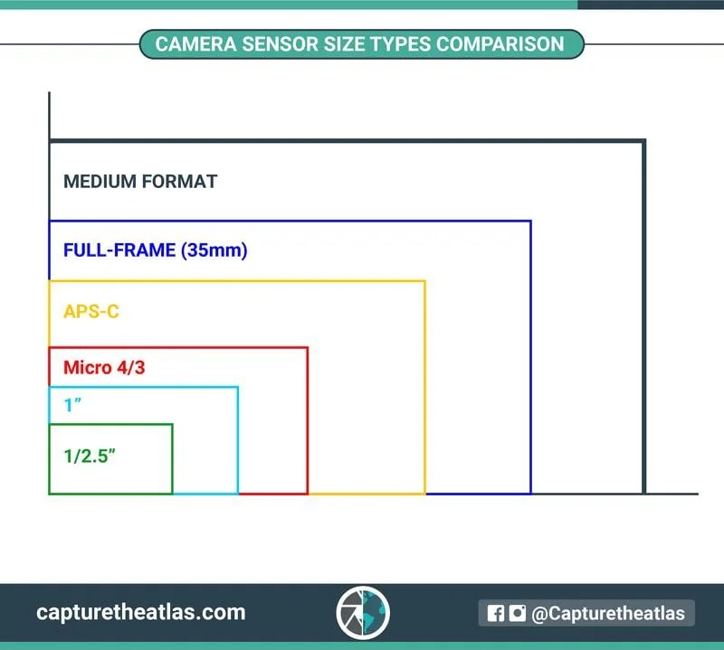
画幅可以说重要也不重要。重要的点在于，你买相机本质上就是在买比手机更大的画幅，及其带来的更好的画质。而不重要的点在于，只要你买到了M4/3以上的机器，你的画幅无论如何都比手机大多了。
全画幅是现在主流的摄影格式，任何有5000元预算的人都应该考虑全画幅。它能带来更多的进光量（更少的噪点和更多的细节）、更漂亮的背景虚化、更专业的镜头群，和最重要的——心理优越感。半画幅和全画幅的区别倒是没那么大，总体在体感上比全画幅差的有限。但是M4/3在暗光环境下画质会明显更差，背景虚化也会更不明显。
1.3 像素越高越好吗？手机都有一亿像素了，相机的2400万像素够用吗？#
我将发出我本文的第一个暴论：像素不重要。或者说，2000万像素以上的区别对于一个摄影新手而言没有任何意义。你看到的小红书或者cc98上绝大多数的摄影作品，不管优秀与否，大多是用2000万、2400万或3300万像素量级的机器拍出来的。
1.4 总结#
你不一定要全部记住，只需要知道：“相机”这个概念下有非常多的品类，大家应该主要考虑的是“无反相机”，或者“微单”。“单反”是给预算较低的同学的。
2 镜头可能比你想象的重要得多#
2.1 镜头是“买相机送的”吗？我要花多少钱买镜头？#
不是。套头（Kit lens）可以是买相机送的，但是对于摄影而言，镜头群甚至比机身还重要。机身更像一个“入门摄影的门槛”：你必须有机身才能拍照。但镜头的种种因素，决定了你到底能拍什么，拍到的东西是什么样的，甚至愿不愿意把相机带出门。是镜头群的丰富，造就每个人独特的摄影体验。
关于买镜头的预算，建议的值是全部预算的20%到60%。请把更多的预算用来体验换镜头的新鲜感。
2.2 焦段是什么？#
焦段技术上来说是“镜头的光学焦距”，但是实际上我们更多的是指“视角”。一个数字比较小的焦段会带来更广的视角；而一个数字比较大的焦段会带来更窄的视角，用它你可以拍得更远。
一般说的“焦段”指的是镜头的实际焦距，而 等效焦距 则是：如果换成全画幅相机，要使用多少毫米的镜头，才能得到相同的视角。对于更小的画幅，如APS-C和M4/3,视角往往会更窄，看起来也就像使用了焦距更长的镜头。
主流的APS-C画幅镜头的等效焦距需要乘以1.5（佳能的APS-C更小，×1.6，M4/3则是×2）。例如，我想在APS-C的相机上得到接近全画幅50 mm镜头的视角，我就会使用35 mm镜头（35 × 1.5 = 52.5）。如果我使用的是M4/3相机，我就会选择25 mm镜头（25 × 2 = 50）。需要注意的是，镜头上标注的都是实际焦距，所以各位要根据画幅自己换算。
那么，焦段的数字到底是什么概念呢？我们可以用你生活中最常见手机来一探究竟。以iPhone为例，我使用的iPhone 17的主摄像头等效焦距为26 mm，超广角（0.5倍）则是13 mm。主流的相机视角中，35、50、85就分别大约是主摄像头的1.3倍、2倍和3.2倍。
所以，你其实早就已经接触过很多不同的焦段了。手机上的0.5×、1×、2×、3×，本质上就是在改变你能够看到的范围。焦距越短，看到的范围越广；焦距越长，看到的范围越窄，远处的东西也会在画面中显得越大。
我们可以大致把常见焦段理解成下面几个范围：
- 12-20 mm：超广角。这是比手机主摄宽得多的视角，13 mm基本就是手机0.5×超广角的感觉。适合建筑、室内、风景，以及一些强调空间感的照片。但画面边缘的透视会非常夸张。
- 24-35 mm：广角。24-28 mm和手机主摄的视角很接近，35 mm稍微窄一点，在街拍、旅行、纪实摄影中非常常见。这些焦段，往往因为“和手机主摄没有很大区别”而显得难用。
- 40-65 mm：标准焦段。最典型的就是50 mm。拍人、拍物、拍街景都可以，经常被称为非常经典的标准焦段。
- 70-135 mm：中长焦。85 mm是非常经典的人像焦段；105、135 mm则会让视角进一步收窄。
- 135-200 mm：长焦。200 mm已经相当于手机主摄接近8×的视角。这个范围常用于望远。
- 300 mm +：到了300或400 mm以上，焦距的意义会开始发生一些变化。35、50、85 mm之间的区别对于构图意义重大；而400、600、800 mm之间的区别，很多时候只是“拍的足够大”的区别。
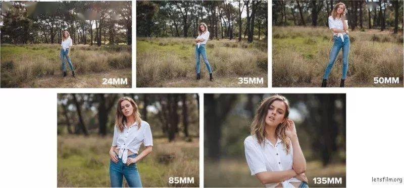
2.3 为什么我的镜头拧了不能变大？——定焦镜头和变焦镜头#
这是我在网上刷到的真实问题。虽然有些滑稽，但是这确实反映了很多人的看法：似乎大众都认为“相机镜头是拧一下就能变大变小的”。
事实上，可以拧一下“变大变小”的镜头叫做变焦镜头。另外一类，则是焦距不能变化的定焦镜头。这两类镜头各自有各自的优缺点和特性。
变焦镜头，尤其是标准变焦镜头和大变焦头的重要优点就是灵活。例如一个24-70 mm的标准变焦涵盖了常用的广角到中长焦的大多数焦段：24、35、50、70，从全景照片到远处特写都能胜任。
定焦镜头的特点有很多：轻便小巧、画质更好、部分很便宜、有大光圈、规格多样等。它在人物摄影、特殊摄影（如微距、建筑、星空）、街拍中有不可替代的地位。它的缺点就是没有了变焦的灵活。
2.4 光圈是什么？我需要大光圈吗？#
光圈代表镜头的几何进光量。它是曝光三要素之一。光圈叶片是一个镜头中控制进光量的机械结构，叶片的扩张可以增加进光量，收缩可以减少进光量。大光圈会带来更多的虚化。
光圈用f值表示。数字越小，光圈越大。
多大的光圈算是大呢？
一般来说，f/4到f/2.8属于中规中矩，小于等于f/2都能叫做“大光圈”。便宜一些的大光圈定焦（“大光腚”）镜头都是f/2或者f/1.8，这里也是国产镜头的主场。普通价格的变焦镜头的光圈不会大于2.8，常见范围是2.8-6.3。
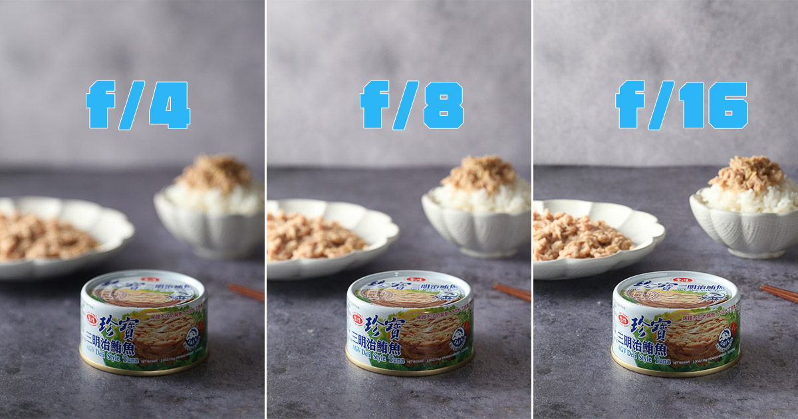
2.5 镜头画质是什么？重要吗？#
“画质”是一个很抽象的词。对于新手，只要一个镜头的画质不差到惊天地泣鬼神，它就完全可用。在摄影圈俚语中，画质不好的镜头被叫做狗头，画质好的镜头叫做牛头。摄影圈也流传着这么一句话：“狗定胜牛变”。这句话有些时候是真的，但是我认为在2026年的今天，已经稍显过时。
对于新手，画质中最应该关心的要素有以下这些：
- 锐度 锐度就是“清楚程度”，它会影响画面中的细节保留和画面质感。
- 色散 色散指的是你在物体之间的分界线上看到的或紫或绿的边缘，是不好的现象，在后期也比较难消除。
- 畸变 在2026年的今天是一个可以被忽略的光学缺陷，后期软件或者相机本身会自动进行畸变修正。
- 暗角 可以由相机或后期软件自动修正，所以一般不需要太在意。
- 逆光表现 当强光进入镜头时，有些镜头会出现鬼影、眩光，或者整个画面对比度明显下降，对新手而言重要性低。
- 焦外 这里半只脚踏入了玄学的空间。它决定了背景虚化柔美与否、是否干净，对新手也不重要。
购买建议：画质能用即可，绝大多数现代镜头的画质都足够新手使用。只要一颗现代镜头没有特别明显的光学缺陷，画质通常不应该是决定购买的第一因素。
2.6 我要买什么焦段、什么光圈的镜头？#
在实际回答这个问题前，我们先把前面关于焦段的知识变成真正的镜头规格。以下的推荐指数（星星）仅针对没有特殊需求的初学者。同时，以下所有的焦段全部以全画幅为基准。
- 标准变焦★★☆ 类似24-70 mm焦段范围的镜头，被称为标准变焦镜头。它是最常用的镜头类别之一。严格来说，各家的低端套头也可以被归类为标准变焦。泛用性极强。
- 超广角变焦★ 广角端小于全画幅等效20 mm的变焦镜头，称为超广角变焦镜头。这些镜头适合对广角风光或者星空摄影感兴趣的用户。
- 中长焦变焦★（高预算★★★） 类似70-200 mm变焦范围的镜头，则是中长变焦。御三家都有主打高端的拳头产品70-200 mm f/2.8。
- 长焦变焦★☆ 这里是各个厂家神仙打架的地方，每家都有独特的规格。比较常见的是100-400 mm。各家都有这个范围的产品，有高端的，也有便宜轻便，光圈稍小的。
- 大变焦/旅游变焦★★★ 大变焦头，或“大便浇头”，初学者唯一真神。各品牌都有不错的选择。这类镜头凭借夸张的覆盖范围和题材泛用性，在换镜头不方便但需要大量记录的旅游环境中有不可替代的地位。
- 标准定焦★★☆ 标准定焦是初学者最爱的，也是国产厂商竞争最激烈（所以最便宜）的种类。一般是50 mm左右的大光圈定焦镜头。这类镜头常常成为“年轻人的第一支大光腚”，我也不例外。
- 人像定焦和广角定焦★★ “人像”在这里指“中长焦”。这两颗镜头最经典的焦段是85 mm和35 mm。85 mm比同光圈的50 mm的背景虚化强得多，适合拍半身像。35 mm比起85，可以带入更多背景信息。
- 特殊镜头 ☆ 有以下种类：超长焦、极端超广角（12 mm以下）、移轴、鱼眼等。
那么，我对没有特殊需求的新手的推荐是什么呢？就是摄影圈最爱的组合：一定一变。变焦负责灵活性，定焦负责大光圈虚化和暗光环境。对于变焦镜头，入门比较合适的只有之前提到的2种类别：标准变焦镜头和大变焦头。这两者建议根据预算来，低端的标准变焦一般会比大变焦头便宜。定焦镜头的选择更加多样，但是如果只打算购入一颗，我的建议会是50 mm f/1.8。
2.7 为什么24-70、24-105、20-70、28-200都有人买？#
这一系列规格，看起来互相重叠得很厉害，为什么却都有人买？答案其实很简单：变焦镜头永远是在做取舍。广角、长焦、光圈、体积、重量、价格和画质不可能全部兼得，不同焦段只是选择了不同的平衡点。
24-70 mm f/2.8是最经典的方案。24 mm足够应付大多数风景、建筑和室内，70 mm也能拍人像和细节。24-105 mm f/4则牺牲一档光圈，换来更长的长焦端。20-70 mm f/4正好相反，换来更多的广角。28-200 mm则干脆牺牲广角和大光圈，换来巨大的变焦范围。
我的购买建议则是：对于新手，变焦镜头的焦段远比画质或者光圈重要。如果有条件，请购入24-70 mm、24-105 mm、24-200 mm，或者类似变焦范围的镜头作为你的第一支变焦。
2.8 除了焦段、光圈和画质，还要看什么？#
一颗镜头不止由玻璃组成。现代的自动对焦镜头有非常多东西需要考虑。
- 重量和体积 这是一个相当重要的考虑因素。小重量、小体积更容易携带，但往往意味着做出妥协。推荐用 https://camerasize.com/compact 查看。
- 防抖 一般而言有用，在一般焦段的镜头上可有可无。在长焦会显得更加重要。
- 对焦 对焦在一定程度上决定了你会不会拍糊。但是对于新手而言，好的机身在对焦方面更重要。
- 最近对焦距离/最大放大倍率 决定了你能不能凑近拍小东西。注意，最近对焦距离指的是传感器平面（机身上的⦵）和被摄物体的距离，不是镜头前端和被摄物体的距离。
- 滤镜口径 镜头前面的Ø67 mm不是镜头焦距，是滤镜口径。大口径的滤镜会更贵。
2.9 总结#
总的来说，镜头并不存在一个简单的“越贵越好”（不过当然，很多时候越贵真的越好）。焦段、光圈、画质、重量、体积和价格之间永远存在取舍。
3 参数表上的数字，拿在手里到底是什么感觉？#
机身和机身的各个参数对于最后的成片远没有你想象的重要。对于机身，我想强调的不只是能让你出片的参数，还有更重要的——体验。
当然，参数和摄影原理还是要简单介绍的，它们会帮助你更好地选购机身。
3.1 “曝光三要素”是什么？#
我这一节只会简短介绍，具体使用方法我会放到第6章详细说明。曝光三要素是决定照片明暗的三个主要设置，分别是光圈、快门速度和感光度（ISO）。光圈代表从镜头进来的光的多少，用f表示，如f/1.8。快门速度，就是拍下一张照片时传感器接收光线的时间，单位为秒（s）。感光度则是相机传感器将收到的光信号“放大”多少。感光度越高，在其他设置不变的情况下，照片就会越亮，但通常也会带来更多噪点。感光度没有单位，它的表示方式是ISO，如ISO 800。
3.2 尼康真的对不上人吗？——自动对焦#
（尼康笑话致歉）
**自动对焦（AF，Autofocus）**是机身最重要的性能之一，也是不同年代相机体验差距最大的地方之一。所谓合焦，简单来说，就是让焦平面落在我们想拍清楚的主体上。一套现代自动对焦系统实际上要完成几件事情：找到主体、判断现在是否合焦、驱动镜头完成对焦，以及在主体移动时继续跟住它。
首先是主体识别。传统相机需要摄影者自己选择画面中的对焦点，而现在的相机已经可以自动判断画面里有什么。人物和人眼识别现在已经非常普遍，较新的相机还可以识别动物、火车和飞机等主体。
接下来才是真正的自动对焦。现代无反相机最重要的对焦方式是相位检测自动对焦。它能非常迅速地把焦点拉到正确位置。另一种方法叫对比度检测自动对焦。这种方法有时会出现镜头前后反复寻找焦点的现象，也就是“拉风箱”。
如果主体会移动，就还要考虑连续对焦和主体追踪。优秀的自动对焦系统会把主体识别、追踪和连续对焦结合起来，让对焦框尽量“黏”在人物或动物的眼睛上。
最后，真正负责移动镜片的是镜头里的自动对焦马达。在第2章已经说过。
3.3 20 fps、30 fps有什么用？——连拍速度和缓存#
选购机身时，你应该经常会看到“最大x张每秒”的宣传。连拍速度通常用**fps（frames per second，每秒帧数）**表示（注意不要和快门速度弄混）。宣传中经常会出现10 fps、20 fps、40 fps甚至120 fps，但是这样的连拍速度能持续多久，拍什么规格的照片才能有这种速度，是他们不会宣传的。
相机有两种拍摄文件格式：RAW和JPEG。RAW文件可以被理解为相片的“源文件”，有更多后期空间。JPEG是相机在拍摄时就为你进行一定调色的文件，也就是“直出”。RAW文件通常明显大于JPEG。
高速连拍大多不能一直拍。相机拍到的照片需要首先进入缓存，然后再进入存储卡。这个流程有两个瓶颈：缓存深度和存储卡写入速度。当高速连拍把缓存占满了，但是缓存里的照片还没有完全写入存储卡，连拍速度就会开始变慢。存储卡的写入速度由存储卡本身决定。
体感上10 fps是一个相当快的连拍速度，对于新手绝对够用。部分相机只支持~ 5 fps级别的连拍，其实也非常可用。对于有拍摄快速移动主体需求（如鸟类、运动）的读者，个人建议购买有10 fps以上连拍能力的相机。
3.4 机械快门和电子快门有什么区别？#
刚才提到的高速连拍很多时候都依赖电子快门。现代无反相机一般有两种主要的快门方式：机械快门和电子快门。上一节讲到的20 fps、30 fps甚至更高的数字，都是在电子快门下实现的。
机械快门很好理解：拍照时，快门帘打开，让传感器曝光，再关闭结束曝光。电子快门则不需要快门帘运动，而是直接通过传感器完成曝光。
但电子快门也有自己的问题。绝大多数相机的传感器会一行一行读取信号，高速移动的物体可能会被拍歪。例如高铁上拍摄旁边的栏杆，很容易发生变形（手机也会，大家可以试试）。这个现象叫做果冻效应（Rolling Shutter）。传感器读取速度越快，这个问题通常越轻。半堆栈式和堆栈式传感器读取速度更快，果冻效应会减轻很多。全域快门传感器是所有像素同时读取信号，从根本上解决了这个问题。
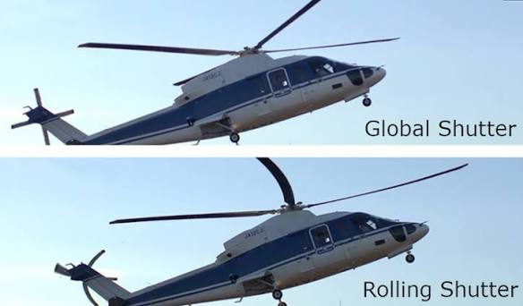
电子快门在部分人工灯光下还可能遇到频闪：灯本身在非常快速地明暗变化，而传感器又是一行一行读取，最后照片中可能出现一条一条的明暗横纹。
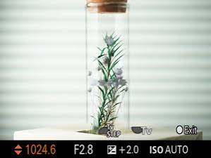
3.5 防抖是什么意思？#
从这一节开始，以下的参数更多地影响拍摄体验，而不是拍摄效果。
这里说的防抖，一般指机身防抖（IBIS，In-Body Image Stabilization）：传感器本身会根据相机的晃动进行反向移动，尽量抵消手抖。
值得注意的是，防抖不能解决被摄物体自己在动的问题。例如，你用1/20 s快门拍一只狂奔的狗，就算相机纹丝不动，狗还是会糊。
3.6 取景器是什么？有用吗？#
取景器其实就是大多数人想象专业摄影师凑近去看的那个小窗口。大部分时候看屏幕已经足够，但是有时候取景器看起来体感就是比屏幕更好。现代无反相机有一部分已经取消了取景器，而还在用取景器的都是EVF（Electronic Viewfinder，电子取景器），本质就是一个放在军舰头里的小屏幕。
不同取景器之间的区别非常大，但是不应该是第一台相机的决定因素。索尼A7C II（我使用的机器）的EVF观感和索尼A7R VI、尼康Z8、佳能R5 Mark II比起来，说难听点，就是一坨屎。尽管如此，它也并没有妨碍我拍出让我满意的照片。
3.7 屏幕只是用来看看照片吗？——翻折屏、侧翻屏和触控#
机身屏幕除了回看照片，还会被用来取景、选择对焦点、调整参数和拍摄低机位或高机位照片。
我认为屏幕结构比分辨率更值得关注。最简单的是固定屏；上下翻折屏很适合摄影，可以从腰部或者低机位取景；侧翻屏可以翻到机身侧面甚至转向正前方，对自拍和视频更方便。
触控也类似。有些相机几乎所有菜单都可以触摸操作，有些机器的触控功能却只够让你点一下对焦。它不会影响画质，但会明显影响使用相机时的心情。
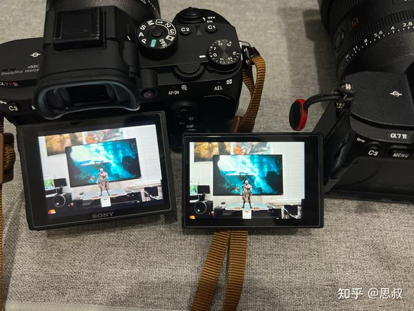
3.8 500 g和700 g，真的只差200 g吗？——重量、尺寸和重心#
200 g听起来并不多，但相机是一件可能被你挂在脖子上，背在肩上或者拿在手里一整天的东西。拿5分钟的时候，500 g和700 g可能没什么区别；旅行一整天的时候，它们的区别就会明显得多。
而且真正应该考虑的不是机身重量，而是机身加镜头的总重量和重心。一台很轻的小机身搭配一颗1 kg的长焦镜头，并不一定比稍重但手柄更大的机身舒服。相反，一颗小镜头装在轻机身上，可能真的会让你愿意每天把相机塞进包里。因此，重量和体积需要和镜头、握持以及使用场景一起考虑。
顺便给大家一个小Tip：“肩带”被这么叫是有原因的。将相机斜挎在身上或者用一侧肩膀背着，比挂在脖子上舒服得多，也更容易持续。
3.9 为什么有些相机一拿起来就很好用？——手柄、拨轮和按键#
手柄够不够深、小拇指有没有地方放、前后拨轮的位置顺不顺手、有没有对焦摇杆、有没有AF-ON按键、自定义按键够不够，这些都会影响操作体验。
对于经常使用手动或半自动曝光的人来说，两个甚至三个拨轮会比一个拨轮方便得多，因为快门、光圈、ISO等参数可以分别快速调整。对焦摇杆则可以让你不用一直戳屏幕，就能快速移动对焦点。这些功能不会直接让画质变好，但会让你在需要调整参数的时候更快，也更愿意使用相机。因此，如果条件允许，我非常建议在购买前实际摸一下机身。
3.10 一块电池到底能拍多久？——续航和充电#
相机的续航经常用CIPA标准下的“可拍摄张数”表示，例如300张、500张、700张。就我个人体感而言，实际拍摄张数会比CIPA标准多的多。
现在比较重要的反而是相机能不能通过USB-C充电和供电。旅行时可以直接用充电宝给相机充电，会方便很多。普通摄影用户只要一块电池能支撑半天到一天，通常就不是什么大问题。
3.11 单卡槽、双卡槽和各种接口，我需要在意吗？#
大多数入门和中端相机使用一个存储卡槽，而部分中高端相机会提供两个。
双卡槽最大的意义是备份，因此婚礼、新闻、商业摄影等不能重拍的场景，会非常看重双卡槽。对于普通新手，一张靠谱的存储卡通常已经足够，没有必要为了双卡槽多花很多钱。
接口方面，常见的有USB-C、HDMI、麦克风接口和耳机接口。只拍照片的人一般只需要关心USB-C。
3.12 防尘防滴是不是就能淋雨？——机身做工和可靠性#
部分中高端机身会宣传防尘防滴或者类似的密封设计。它的意思通常是机身在按键、卡槽、接口和接缝等位置进行了额外处理，可以降低灰尘和水滴进入机身的风险，但需要注意：防尘防滴不等于防水。
至于“镁合金机身”“快门寿命几十万次”等规格，对普通新手通常更加不重要。一台正常使用的现代相机，一般会在损坏之前被你卖掉（）
3.13 视频参数要不要看？#
如果你主要拍照片，那么不用。
视频规格常见的数字有很多，对于认真拍视频的人非常重要，但对于只偶尔记录生活的摄影用户，能够正常拍摄4K视频通常已经相当足够。
3.14 总结#
如果让我排一个机身选择顺序，就会是这样：1. 对焦够不够用；2. 重量和体积自己能不能接受；3. 有没有自己需要的防抖、连拍、视频等功能；4. 取景器分辨率、屏幕规格和各种纸面数字。一台你愿意每天带出去，而且不会妨碍你拍照的机身，就是一台好机身。
4 尼康拍鸟、佳能直出、索尼干活、富士胶片……我到底在选什么？#
经过了漫长的科普，终于可以开始接触真正的相机市场了。想必这也是大家更关心的。
2026年的相机市场远比2023年更加健康：那时的相机市场充斥着各种价格虚高的机器，而2026年的现在，我们可以用曾经只敢买半画幅的价格选购全画幅机型。接下来，我将带领你们初次认识相机市场，并了解各个相机、镜头品牌的特征。
我会在每个品牌的机身介绍后面加一个简短的对焦性能提示，来简单说明机器的对焦性能。这里会使用一个非常主观的“梯队”标准，最高为T0。这个分类主要描述实际拍摄体验。
- T0：目前第一梯队。非常可靠。
- T1：现代化对焦体验。日常拍摄很不错，对于大多数人来说完全够用。
- T2：能用，但能够明显感觉到和现代优秀机身之间的差距。 这个评级只针对现代无反机身，而且仅供快速参考。
4.1 卡口是什么？#
在选择品牌之前，我们一定要先弄明白卡口。卡口可以简单理解为机身和镜头连接的接口。大家没必要全部记住，只需要知道自己准备购买的相机使用什么卡口即可。一个品牌可以使用多个卡口，一个卡口也可以由多个品牌共同使用。
索尼E、尼康Z和佳能RF卡口都同时用于全画幅与APS-C无反机身。同一卡口下，全画幅镜头可以装在APS-C机身上；APS-C镜头装在全画幅机身上通常会自动裁切画面，否则可能出现黑边。识别镜头时，索尼全画幅镜头标FE、半画幅镜头标E；尼康半画幅镜头标DX；佳能半画幅镜头标RF-S。
另外，L卡口由徕卡、松下和适马等品牌共同使用，以全画幅为主；富士X卡口只用于APS-C；M4/3卡口主要由奥之心/奥林巴斯和松下使用，两家的机身与镜头原则上可以互通。
再往前就是单反时代。那时市场主要由佳能EF卡口和尼康F卡口占据，也有索尼、宾得等品牌。
我们可以通过转接环，把很多单反时代的老镜头转接到现代无反机身上。例如把佳能EF、尼康F或索尼A卡口镜头转接到现在的E、Z、RF等无反机身上。
关于购买：网上经常有“索尼口”“佳能口”“尼康口”的用法，注意分辨卡口实际英文字母名称，不要买错镜头。
4.2 “换门”是什么？#
最后在开始实际介绍前，我们说说“换门”这件事。换门，就是把自己手上某一卡口/品牌的相机、镜头，全部卖出，换成另外一个品牌的相机和镜头。这个过程会亏钱，尤其是当你购入的是全新镜头和机身——全新到二手的折价非常恐怖。所以选择品牌前，一定要考虑好这个品牌值不值得你一直留下。
4.3 老大哥，相机市场份额绝对的GOAT——佳能（Canon）#
说到佳能，大家一定会非常熟悉。从小到大说到相机就是“佳能尼康”，现在索尼或者富士似乎越来越出名，但是“佳能相机”的品牌知名度已经深入人心。从2003年到2025年，它已经连续23年保持全球可换镜头数码相机销量份额第一。
4.3.1 “高性价比？”——佳能的机身#
佳能无反相机以“R+数字”的方式命名。从2018年佳能首次发布第一台R系列无反相机，到今天已经过了8年。
对于拍照，佳能比较值得购买的全画幅机身有：
- R8和R8 Mark II：全画幅入门，R8 Mark II不推荐
- R6、R6 Mark II和R6 Mark III：全画幅基准机身
- R5和R5 Mark II：全画幅高像素准专业机身
半画幅机身有：
- R50：中低端半画幅机身
- R10：中端半画幅机身
如果你逛二手市场，还会遇到数量极其庞大的佳能单反。低预算同学可以留意600D、6D等二手产品。
佳能机身使用体验优秀，适合不爱折腾的新手。佳能中高端机身的屏幕、取景器和菜单操作通常有不错的使用体验，持握手感不管对于大手还是小手都十分舒适。佳能在无反时代的电子取景器显示也非常好看。佳能的机身在同定位的产品中属于非常有性价比的一档。
对焦性能提示 佳能目前的主流EOS R机身整体对焦水平很高。新一代机身可以粗略归入T0；R7、R10、R50等机身可以归入T1。
4.3.2 封闭的桃花源——佳能的镜头群#
佳能RF镜头数量很多。“L”指的是高级镜头。
全画幅镜头比较有代表性的有：
- RF 50 mm f/1.8：著名的“小痰盂”，很多人的第一支大光圈定焦镜头
- RF 24-105 mm f/4 L：非常经典的全画幅标准变焦，画质不错
- RF 800 mm f/11：一支非常“佳能”的镜头，用垃圾的光圈给了你800 mm
- RF 70-200 mm f/2.8 L：佳能高端红圈变焦的代表
APS-C镜头选择相对比较少。
可以看出来，一个让很多人诟病的问题，就是佳能是个“苹果”相机。一个“苹果”相机品牌的特点当然包括精致做工和良好体验，但也代表它非常封闭。
我们前面已经说了佳能机身很便宜，但是交了机身的低廉入场费，迎面走来的是——佳能的高价镜头群。虽然凭良心讲，佳能的镜头比尼康、索尼的原厂镜头贵得不明显，但是由于佳能从根源上卡死了购买廉价副厂镜头的可能性，你实际上是没有多少选择空间的。
另外，佳能的镜头群还有一个比较明显的特点：两极分化。佳能自己确实生产了不少便宜的RF镜头，但是这些廉价镜头大多做出了非常明显的妥协。红圈的L系列镜头素质很不错，但是价格非常高昂，而且大多都很重。中间的“画质比较好，价格又合理”的镜头数量略少。
4.3.3 佳能对无反的第一次尝试——EF-M系统#
佳能还有一套已经停止发展的EF-M无反系统。它使用APS-C传感器，定位基本都是小型、轻量的入门和中端相机。由于系统已经被RF取代，现在主要值得在二手市场考虑。
4.3.4 总结与购买建议#
总的来说，佳能是一个很有“老大哥”自信和体量的大品牌。我推荐在意机身使用体验、直出色彩，喜欢佳能原厂镜头的同学选择佳能。预算比较充裕的话，佳能完整的原厂镜头体系也非常舒服。
4.4 硕大的肌肉，激情的拍摄——尼康（Nikon）#
尼康的名声一直有点抽象，似乎是技术宅专属的玩具。传说中的“拍摄超级利器”800定，陈忠祥那个，全称叫做AF-S 800 mm f/5.6E FL，是单反F卡口的镜头。陈忠祥视频：https://www.bilibili.com/video/BV1uT4y1T734/?share_source=copy_web&vd_source=6ec2ad53e5a745c6f54954d69f9bdf2c
尼康在机身规格和参数上堆得比较狠，在价格低廉的普通机身上也有别的品牌死活不给的参数——例如尼康入门全画幅Z5 II甚至有视频RAW内录。这也是尼康被称为“老实人”的原因。
尼康也很喜欢造光学奇观。在无反新时代，它抓住了机会，设计出了现在常用全画幅相机中最大的Z口，并创造了即使是现在都没人超越的光学奇迹——尼康“夜神”，Z 58 mm f/0.95 S Noct。
4.4.1 尼康的机身#
代表性的无反机身有：
- Z5和Z5 II：入门全画幅系列，老Z5比较落后
- Z5 IIC：我写文章的时候正好首发，不推荐
- Zf：外观复古但是内部相当现代，标准全画幅机器
- Z6、Z6 II和Z6 III：Z6 III很不错，前两代不适合购买
- Z8和Z9：准旗舰和旗舰，后者不适合新手
尼康的半画幅DX机身，相对少很多：
- Z30：入门视频向机身，没有电子取景器
- Zfc：复古APS-C机身，外观非常漂亮
- Z50和Z50 II：尼康最标准的APS-C无反，Z50 II对焦和视频性能明显更好
尼康目前最大的一个产品线缺口，是没有真正高端的APS-C无反。
尼康在单反时代虽说矮佳能一头，但也算打的有来有回。低预算玩家可以看看D610、D810、D7100这些尼康老单反。
对焦性能提示 搭载EXPEED 6处理器的机身的对焦能力可以粗略看作T2。搭载了EXPEED 7的机身有些已经进入T1，Z6 III、Z8和Z9则属于T0~T0.5。
4.4.2 尼康的镜头群#
尼康Z卡口的镜头群非常有自己的性格。它有很多规格正常、价格尚可，但是光学素质非常高的中高端镜头。尼康的高端镜头叫做“S-Line”，后缀S。
比较典型的全画幅镜头有：
- Z 40 mm f/2：很典型的廉价轻量定焦，我用过，十分轻便，推荐
- Z 50 mm f/1.8 S：著名的“狗王”，我也用过，画质比其他品牌竞品好多了
- Z 24-120 mm f/4 S：非常优秀的中高端旅游和挂机镜头
- Z 24-70 mm f/2.8 S II和Z 70-200 mm f/2.8 S II：新一代大三元，主打轻量化，画质优异
- Z 180-600 mm f/5.6-6.3：很多拍鸟用户第一支“大炮”
尼康的副厂生态处在一个中不溜的位置。它远没有索尼E卡口那么开放，但是明显比佳能RF全画幅丰富。腾龙已经有多支原生Z卡口镜头；适马则主要集中在半画幅。
4.4.3 一次失败的提前量——Nikon 1系统#
在Z系统之前，尼康还做过一套叫Nikon 1的无反系统。理念很先进，但是它使用幽默的1英寸传感器，明确不推荐购买。
4.4.4 来自曾经尼康用户的总结和购买建议#
我认为尼康远远没有到“药丸”的程度，新手购入尼康也是个不错的选择。但是对于新手来说，索尼拥有更成熟的副厂生态，而佳能则拥有更大的市场规模和非常完整的产品线。
4.5 外星科技——索尼（Sony）#
索尼是御三家中最早全面押注全画幅无反的厂商。初代A7在2013年就已经发布，比尼康Z、佳能RF早了整整五年。这个提前量最终变成了今天E卡口最明显的优势：成熟。机身已经迭代了很多代，原厂镜头数量极其庞大，卡口也足够开放。你几乎可以在任何价格、焦段和体积里找到想要的镜头。
当然，索尼的握持、菜单、屏幕和取景器曾经长期处于垃圾（我找不到更合适的词）的状态。好消息是，索尼近几代传统A7机身的操控和显示已经正常很多了。
4.5.1 索尼的机身#
A7是最普通的全画幅基准系列；A7R的R可以简单理解成Resolution，高像素；A7S偏向视频；A7C则是Compact，小型化全画幅；A9是高速专业机；A1则是什么都要的旗舰。除此之外还有APS-C的A6xxx系列和视频向的ZV、FX系列。
索尼现在值得认识的全画幅机身有：
- A7 III、A7 IV和A7 V：索尼最标准的全画幅系列
- A7C、A7C II和A7CR：紧凑型全画幅，A7C II和A7 IV对标
- A7R IV、A7R V和A7R VI：高像素系列
- A9 III：高速专业机，外星科技，当时特朗普枪击案就是A9 III拍的
- A1和A1 II：索尼旗舰，外星科技，没有竞品
索尼APS-C产品线历史非常悠久，但是最近几年索尼明显更爱全画幅：
- A6000、A6100、A6400和A6600：索尼经典的APS-C系列
- A6700：APS-C的最高端主力
- ZV-E10和ZV-E10 II：视频向APS-C机身，没有电子取景器
索尼便宜的摄影APS-C机身更新得太慢了。A6700很好，但是价格不低；下面居然还长期站着2019年发布的A6400。
索尼机身一个明显的特点就是自动对焦的绝对统治地位。今天佳能、尼康已经追上来了，但是索尼仍然属于最不需要担心自动对焦的系统之一。
对焦性能提示 索尼新机器都是没有争议的T0。A9 III甚至可以是T-1。A7 IV、A7R V等稍早的新世代机身属于T0.5，实际使用非常可靠。A7 III、A6400等老机器可以看作T1.5。
4.5.2 索尼的镜头群#
如果说索尼机身最大的卖点是自动对焦，那么索尼系统真正的优势其实是E卡口镜头群。索尼的中高端镜头“黑G”后缀G，顶级“红/橙G”后缀GM。
索尼原厂全画幅镜头里，我认为比较能代表这个系统的有这些：
- FE 28-60 mm f/4-5.6：经典小套头
- FE 20-70 mm f/4 G：我现在使用的挂机镜头，直接扩展到20 mm很有用
- FE 70-200 mm f/2.8 GM II：“明日之镜”
- FE 400 mm f/4.5 GM和600 mm f/6.3 GM：2026年9月刚发布的怪物，脚踩尼康，索尼才是光学皇帝！
例外的副厂镜头：
- 腾龙28-200 mm f/2.8-5.6：著名的腾龙28-200，也是E卡口旅行大变焦的传奇，索尼亲爹。它的存在让索尼用户在很长一段时间里拥有了一颗别家系统很难直接找到替代品的旅行镜头，很多人就是为了它买的索尼。
索尼APS-C的原厂镜头同样已经非常完整：
- E 16-50 mm f/3.5-5.6：最经典的索尼APS-C套头，有电动变焦
- E 18-135 mm f/3.5-5.6：等效约27-202.5 mm，旅游大变焦
- E 70-350 mm f/4.5-6.3 G：APS-C长焦，画质好
索尼原厂镜头群最明显的倾向是：更小、更轻，但是性能不能掉。而整体来看，真正恐怖的地方在于：这个系统镜头存量巨大，二手市场成熟，各种奇怪规格几乎都有人做。
4.5.3 现任索尼玩家的总结与购买建议#
索尼可能是2026年最不容易买错的系统。不如说，我对预算不算特别低的绝大多数新人都会推荐索尼。所以，如果让我闭着眼睛推荐一个最安全的卡口，那就是索尼E口。
4.6 富士（Fujifilm）#
我对富士确实没有其他几个品牌那么熟悉，所以这一节只做简单介绍。
富士目前主要有两个系统：使用APS-C传感器和X卡口的X系列，以及使用中画幅传感器和G卡口的GFX系列。通常所说的“富士相机”，主要指X系列。GFX不属于本文主要讨论的范围。
富士X系列提供了一套非常完整、很有辨识度的拍摄体验。富士机身大多拥有复古外观、独立拨盘和相当漂亮的直出色彩。它的胶片模拟（Film Simulation）是一整套成熟的机内色彩方案。对于不想花很多时间后期的人，这确实是一个很独特的优势。
4.6.1 富士的机身#
虽然没有全画幅，但富士的机身产品线也比较完整。X-M和X-S系列比较现代；X-T系列有富士最典型的复古拨盘；X-H比较专业。X100系列是不可更换镜头的便携机。还有个知名的“电子垃圾”富士X-Half，我本来很讨厌它，但是我喜欢的女声优小山百代有一台，而且我摸过质感真不错，我决定不评价。至于GFX，中画幅，面向高追求人群。
对焦性能提示 富士的对焦相对一般，和索尼佳能有明显差距，但是不是不能用。新一代机身大致可以放在T1-T1.5，较早的机身则更接近T2。
4.6.2 富士的镜头群#
富士X卡口的镜头群相当成熟。不像其他厂商专注全画幅，富士其实认真做了大量高规格APS-C镜头，而且大多做工很精致。适马、腾龙和唯卓仕等副厂也已经提供了不少X卡口自动对焦镜头。
4.6.3 总结与购买建议#
对于本文的主要读者群，我不会优先推荐富士。富士的APS-C机身和镜头并不便宜，接近全画幅系统的价格。X卡口也只有APS-C机身，以后如果想换全画幅，就只能更换整个系统。
不过，我并不会像很多摄影师一样对富士有意见。富士在市场定位上做的很聪明，它的外观、操控、胶片模拟和完整的APS-C镜头群，都是其他品牌很难直接替代的。
4.7 视频佬的老家——松下（Panasonic Lumix）#
松下拥有两套可换镜头无反系统：使用L卡口的全画幅Lumix S系列，以及使用M4/3卡口的Lumix G系列。这一节先只讲全画幅S系列。M4/3系统会在后面和奥林巴斯、奥之心放在一起介绍。
4.7.1 松下全画幅机身#
我一开始选择相机的时候，其实被Lumix S5一代吸引过，甚至认真考虑过购买。它很多方面都很有吸引力，但最后让我打退堂鼓的，是它的自动对焦。松下的自动对焦一直都不好，不论松友多么卖力地强调它“能用”。
对焦性能提示 S5一代等使用纯反差对焦的老机身可以视为T2.5，而且不适合重视连续对焦的用户。S5 II、S5 IIX以及更新的相位混合对焦机身可以进入T1，已经拥有正常的现代无反对焦体验。
4.7.2 松下全画幅镜头#
松下全画幅镜头群远没有E或者Z卡口丰富，即使是同在L卡口联盟的适马，它的L口镜头也比E口更难购买。但是松下确实有几颗十分有特色的镜头。高端镜头系列是S PRO。一个很有代表性的是S 20-60 mm f/3.5-5.6，从20 mm超广角开始的套头，焦段方便，也是为数不多推荐松下的理由之一。
4.7.3 总结与购买推荐#
Lumix S系统的优点非常明确：机身防抖强，视频规格丰富，散热和长时间录制能力不错，菜单和专业视频工具也做得很完整。缺点则是国内用户和二手存量相对少，一些机身比较重，整个系统的也没有索尼E卡口那么丰富。不适合新手。
4.8 索尼的共轭父子——腾龙（Tamron）#
如果你准备购买索尼E卡口相机，那么腾龙是一个无论如何都绕不开的品牌。“自古腾龙出妖头”。腾龙很擅长制作规格看着奇怪，但是特别实用的变焦镜头。
- 17-28 mm f/2.8、28-75 mm f/2.8 G2和70-180 mm f/2.8 G2：腾龙的轻量f/2.8变焦组合，规格奇怪了一点
- 25-200 mm f/2.8-5.6：从25 mm广角一直覆盖到200 mm长焦
- 28-200 mm f/2.8-5.6：在索尼那里讲过，和25-200 mm唯一的判定标准是“看钱包”
- 35-150 mm f/2-2.8：能代替多支镜头的“多面手”人像变焦
4.8.1 总结与购买建议#
腾龙在不同卡口上的产品数量差距很大，很多有趣的镜头只有索尼E卡口版本。部分镜头的外壳质感、变焦环手感和操控配置也不如高端原厂镜头。但从新手购买角度来说，腾龙仍然是最值得考虑的副厂品牌之一。尤其对于索尼用户，买机身时不把腾龙镜头算进去，几乎等于没有真正了解E卡口的优势。
4.9 世上的另一个尼康——适马（Sigma）#
如果说腾龙喜欢做奇怪但实用的变焦范围，那么适马更像是一个追求极致的传统光学厂商：我给你正常的规格、扎实的用料和非常好的画质，至于重量，就请你自己想办法。
4.9.1 适马的镜头#
适马的现代镜头主要分成三条产品线：
- Art，重点是光学性能和大光圈。
- Contemporary，更重视体积、重量、价格和日常使用，其实就是便宜。
- Sports面向体育、动物和高速运动题材，主要包括高规格长焦镜头。
适马有非常多的特色镜头——甚至可以说适马的特色就是“生产特色镜头”。里面也有比较常规的：
- I Series：全金属镜身的定焦，非常漂亮。题外话：我的35 mm f/2和65 mm f/2都属于这个系列，我带它们去适马的会津工厂开过光。
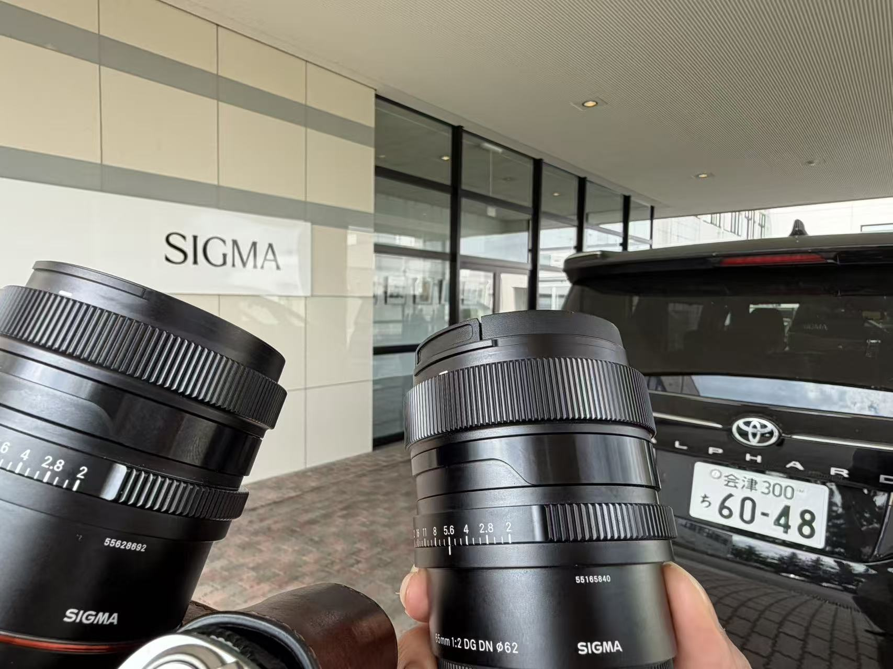
- 16 mm、23 mm、30 mm和56 mm f/1.4 Contemporary：“适马三剑客”，APS-C大光圈定焦
- 18-50 mm f/2.8 Contemporary：经典小型APS-C变焦
- 28-70 mm f/2.8 DG Contemporary：更轻、更便宜的大光圈标准变焦
4.9.2 适马的机身#
作为一个主要卖镜头的厂商，适马也生产自己的相机，但是这些相机过于特殊，缺少传统相机的一些基本配置和使用体验，不适合一般新手。
对焦性能提示 没什么好说的，顶天了T1.5。我再喜欢适马也不会吹它的机身对焦。
4.9.3 总结#
总体而言，适马是我非常愿意推荐的副厂。购买任何卡口之前，都应该看看这个卡口能使用多少适马镜头。其实就是让你买索尼E卡口（）
4.10 小底也有小底的活法——M4/3系统（Olympus / OM System / Panasonic Lumix G）#
M4/3理论上是一个多个品牌合作的系统，但一直以来最主要的两个机身品牌都是奥之心/奥林巴斯和松下。这两家基本可以通用。之前说过，M4/3焦距转换系数约为×2，一支25 mm的M4/3镜头视角大约相当于全画幅50 mm。
M4/3也是一个历史很长、镜头数量极其庞大的系统。奥林巴斯、OM System和松下的M4/3机身与镜头原则上可以互相安装使用，适马、老蛙和其他厂商也生产过大量M4/3镜头。
4.10.1 OM System和奥林巴斯的M4/3机身#
奥林巴斯和现在的OM System更偏向摄影、户外和轻量化。手持高分辨率（“摇摇乐”）、景深合成、Live ND、预拍等功能，有人会觉得没用，但确实是走在计算摄影的前沿。E-M是奥林巴斯时期的机身，现在主要在二手市场出现。本文预算推荐里用到的是E-M5 Mark II、E-M10 Mark II和PEN Lite E-PL5。
对焦性能提示 OM-1甚至能称为T0.5。其他的难评，给个T1.5差不多得了，要不是有松下垫底都不知道飞哪去了。更老的机身（奥林巴斯时代）不评价。
4.10.2 松下M4/3机身#
冷知识：其实松下M4/3是世界上第一台无反相机。松下Lumix G系列则长期偏向视频，而且松下较早的M4/3机身同样长期使用反差对焦；G9 II和GH7等新平台才加入混合相位检测自动对焦。如果拍照，个人更建议奥巴。
对焦性能提示 有相位对焦的勉强T1，反差对焦的T2。松下是这样的。
4.10.3 M4/3系统的代表镜头#
M4/3的镜头群丰富得令人发指，是一个非常恐怖的存在，比现在以“开放”著称的E卡口多不知道哪里去了。我对M4/3了解不算很深，这里只能抛砖引玉，介绍一些经典镜头。
- Lumix G 12-32 mm f/3.5-5.6：真正的饼干套头
- Panasonic Leica 12-60 mm f/2.8-4：均衡的高规格挂机镜头
- OM System 12-100 mm f/4 Pro：等效24-200 mm，一镜走天涯的恒定光圈高规格神头
- Olympus 40-150 mm f/4-5.6：等效约80-300 mm的轻量长焦，只卖几百，推荐
4.10.4 购买建议和总结#
M4/3特别适合低预算用户玩二手。这个系统存在时间很长，老机身、套头、小定焦、旅游变焦和长焦镜头的存量都很大。花很少的钱，就能买到带机身防抖、取景器、翻转屏和不错操控的完整相机。不过画质上限一般。
希望了解更多M4/3的读者可以去B站搜索KOA钝角大王，他发了很多入门视频。
4.11 其他相机厂商#
这里只做简单介绍。
徕卡，卖的是设计、做工、历史、品牌、操作体验，以及某种很难量化的情绪价值。其实论参数远没有御三家强。
宾得，是目前仍然坚守数码单反的少数品牌之一。其实已经被时代抛弃。
理光GR则完全不同。它是唯一一台能把半画幅放进这种大小的卡片机的存在，生态位不可替代。GR可以是一台非常优秀的第二台相机，也可以成为需求极其明确的用户的唯一相机。但是我个人不推荐第一台买它。
哈苏是最有名的中画幅品牌之一。现在的X系统使用比全画幅更大的传感器，主打高像素、色彩、设计和高端静态摄影体验。很重，很贵。
4.12 其他镜头厂商#
唯卓仕是目前最值得关注的国产自动对焦镜头品牌之一。最近几年逐渐开始推出画质、做工和规格都更高的Pro和LAB系列，同时进入全画幅镜头市场。去年推出注重质感的EVO系列。
除此之外，还有大量规模更小或者定位更特殊的镜头品牌。老蛙非常擅长特殊镜头，很多产品几乎没有直接替代品。森养/三阳东西不少，但是国内市场一般。
七工匠、铭匠、星曜、中一光学等国产品牌则提供了大量廉价镜头，可以都看看。
我的建议是：第一支镜头，优先购买原厂、适马、腾龙。便宜国产手动镜头更适合作为第二、第三支镜头。
5 好的，现在交出你的钱#
我们终于来到了各位最期待的环节：博主你好，我有这些预算（说出少得让人眼前一黑的金额），我又想拍人像又想拍风光又想打鸟，我要买什么牌子的相机？
这一章没必要完整看完。可以直接看离你预算范围最近的2~3个小节。
我将用总预算从低到高来列举我会推荐的各个组合。这个价格范围会一直从< 1000元一直到20000元，20000元以上的风景我还没见过，所以只能先行告辞……
我在这里面的价格全部按照“机身全新+镜头二手好成色”来计算，除非我另外写明。
5.1 我有￥1000，我要买什么相机？#
这是一个很低很低的预算。这个钱甚至买不到像样的手机。但是好消息是，你今天遇见了我的文章，而且难得有耐心看到这里。
我会着重看2个品类：老半画幅单反，和M4/3系统。对焦性能可以不用思考了，基本能用就行。半画幅单反的静态画质会明显超过手机，M4/3直出不一定明显，但是更轻便。可能更适合愿意折腾修图的人。
5.1.1 尼康D3100套装#
套装包含：
- 机身 尼康D3100
- 镜头 AF-S DX 18-55 mm f/3.5-5.6G
- 镜头 AF-S DX 35 mm f/1.8G
价格： 全部二手，总价￥1200左右。
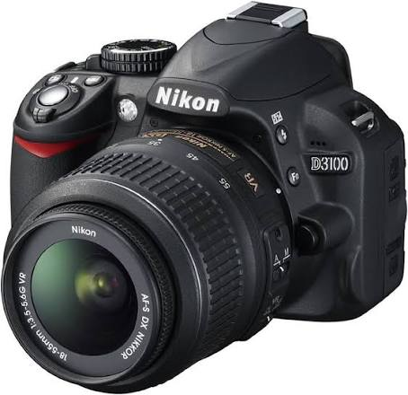
如果你想要什么都拍，而且不追求极致轻便；或者你想拍人像，就选这套。
对的，我甚至能帮你找到一机双镜的组合（不过可能略超预算）。尼康D3100 + DX 18-55 mm的组合大约在￥800，还送相机包和存储卡等配件。35 mm f/1.8G价格约￥450。
尼康D3100是一台1420万像素的APS-C单反，使用尼康F卡口。对焦实在称不上好，但是对于静态对象肯定能用（例如拍人）。这台相机加上电池和存储卡后重量约505 g，可以说相当轻便。
AF-S DX 18-55 mm f/3.5-5.6G是当年的标准套头，等效约27-82.5 mm。重量约265 g。
如果预算还有余量，可以再买一支AF-S DX 35 mm f/1.8G。它在D3100上等效约52.5 mm，基本就是标准镜头的视角。它拥有f/1.8的大光圈，重量约200 g。对于这么一台机身而言，它很可能就是在晚上能拍和不能拍的区别。
如果你想要长焦，不需要大光圈，可以看看AF-S DX 18-105 mm f/3.5-5.6G，这个镜头等效约27-157.5 mm，比18-55 mm远多了。这个镜头会贵200~300元。市面上尼康D3100 + AF-S DX 18-105 mm f/3.5-5.6G的套装正好约1000元。
5.1.2 佳能EOS 600D套装#
套装包含：
- 机身 佳能EOS 600D
- 镜头 EF-S 18-55 mm f/3.5-5.6 II
- 镜头 EF 50 mm f/1.8 II
价格： 全部二手，价格约￥1100。
和尼康的非常像，两者没有实质区别。定焦EF 50 mm f/1.8等效80 mm，虚化比尼康那个强些。
5.1.3 奥林巴斯E-PL5套装#
套装包含：
- 机身 奥林巴斯E-PL5
- 镜头 奥林巴斯M.ZUIKO DIGITAL 14-42 mm f/3.5-5.6 II
价格： 全部二手，价格约￥700
适合需要极致轻便，喜欢白色机身，或者不那么追求虚化的入门玩家。
奥林巴斯E-PL5是一台1605万像素的M4/3微单，有白色机身可选。焦距转换系数约2×，使用反差式自动对焦，会稍微差一点。机身含电池和存储卡重量约325 g。14-42 mm f/3.5-5.6 II是它的标准套头，等效约28-84 mm。重量只有113 g。也就是说，这个相机的完全体也只有不到450 g，轻得非常夸张。
5.2 我有￥2000~3000，我要买什么相机？#
5.2.1 索尼A6000套装#
套装包含：
- 机身 索尼A6000
- 镜头 E PZ 16-50 mm f/3.5-5.6
价格： 全部二手，总价不到￥1500。
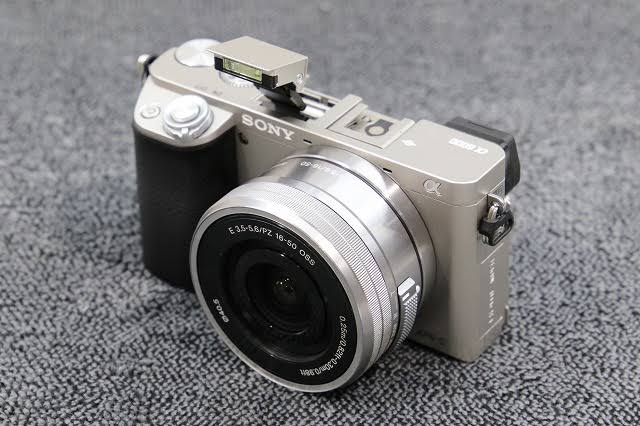
这套适合想未来有机会留在E卡口升级机身镜头，又希望控制重量的新手。A6000含电池和卡约344 g，配116 g的16-50 mm总重约460 g，非常轻。16-50 mm在它上面等效约24-75 mm，收起来很薄，也带镜头防抖。至少在白天旅行时，这套东西已经相当够用。
但是它和现代的新款区别还是很大。它没有机身防抖，也不能拍4K视频；套头的光圈和画质都很普通。它的对焦最多能追普通走动的人。不过，E卡口还是有自己的优势：以后如果你发现自己喜欢拍人像，可以再买一支便宜的国产大光圈定焦；如果喜欢旅行，也可以换一支更长的变焦。
顺带一提，它除了黑色机身外有白色、银色可以选（得自己淘），如果你对颜值有需求可以看看。
5.2.2 索尼A6300套装#
套装包含：
- 机身 索尼A6300
- 镜头 E PZ 16-50 mm f/3.5-5.6
价格： 全部二手，总价约￥2500~3000。
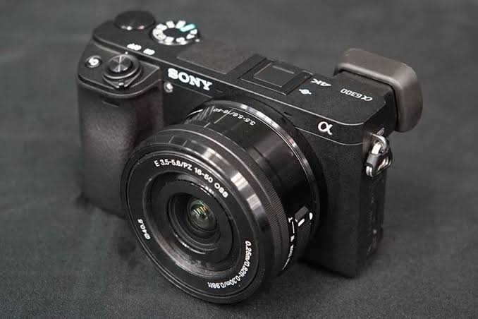
机身可以看作前面A6000套装的升级选择，自动对焦、做工和视频能力更完整，可以拍4K视频。镜头没变。
这里没办法再额外加一只定焦镜头，相比起后面多样化的组合，可能有点不够看。但是同样的，相比起后面的组合，A6300的各方面体验都更现代化，画质也比M4/3更好。
A6300含电池和卡约404 g，装16-50 mm约520 g。它追焦比A6000可靠，拍走动的人和宠物问题不大。
它似乎没有白色机身，但是有银色。不过这个银色不如后面的奥巴好看。
5.2.3 尼康D7200套装#
套装包含：
- 机身 尼康D7200
- 镜头 AF-S DX 18-140 mm f/3.5-5.6G
价格： 全部二手，总价约￥1700-1900。
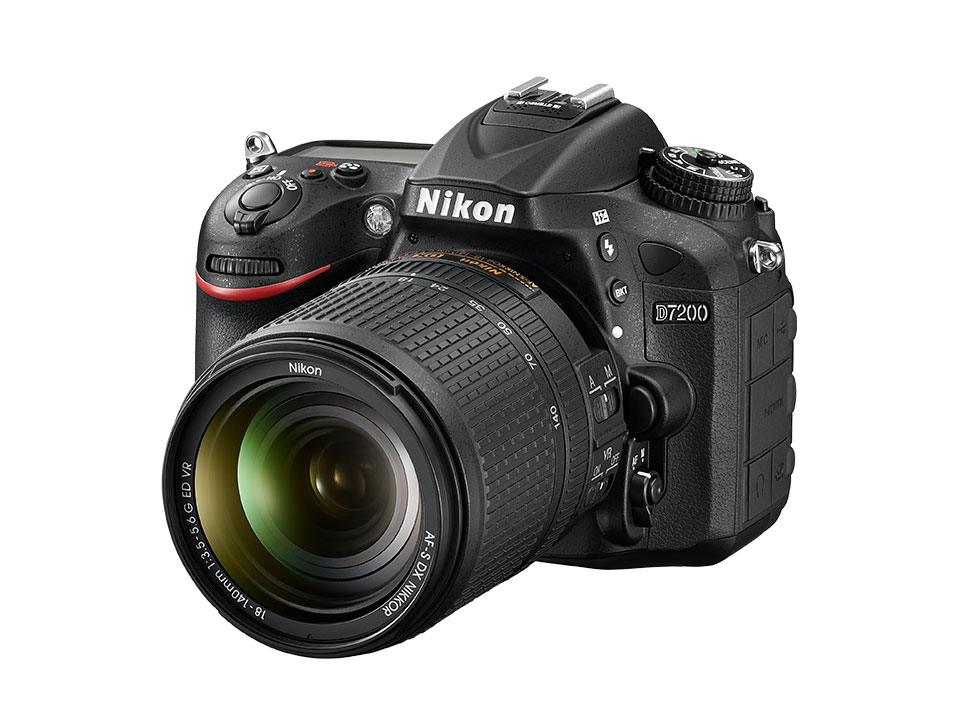
如果你想认真学习摄影，我会优先看这套。D7200是尼康当年的中端APS-C机身，和前面1000元档的D3100比，最大的提升其实是操作。光学取景时对焦更可靠，切到屏幕实时取景就变成反差对焦。18-140 mm在尼康DX机身上等效约27-210 mm，一支镜头便能覆盖大部分场景。整机约1.26 kg，相机和镜头加在一起并不轻。
5.2.4 奥林巴斯E-M10 II套装#
套装包含：
- 机身 奥林巴斯OM-D E-M10 Mark II
- 镜头 奥林巴斯M.ZUIKO DIGITAL 14-42 mm f/3.5-5.6 II
- 镜头 奥林巴斯M.ZUIKO DIGITAL 40-150 mm f/4-5.6
价格： 全部二手，E-M10和14-42 mm的套机不到1500元，40-150 mm单镜头约500元，总价约￥2000。
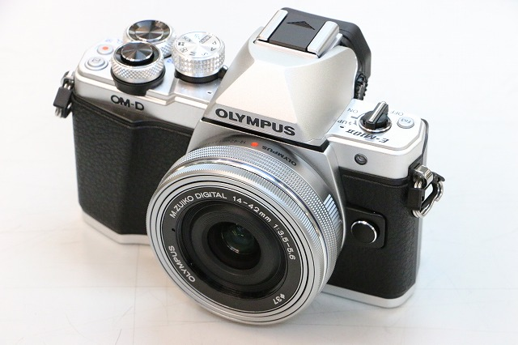
它和E-PL5同样是1600万像素的M4/3机身，却有内置电子取景器和机身防抖。它还有一个非常复古的军舰头，我个人非常喜欢这个外观。两支镜头分别等效约28-84 mm和80-300 mm，从平常出游一直拍到远处的动物、舞台都能试一试。
这套的价值是用不多的钱体验两个完全不同的焦段。300 mm的超远摄视角能让你在旅途中得到和手机拍摄，甚至和很多（没买长焦镜头的）全画幅拍摄完全不一样的新奇体验。机身和两支镜头一起带着只有约693 g，非常轻便。
另外，机身、14-42 mm、40-150 mm都有银色版本。强烈推荐银色机身。
5.2.5 松下G100套装#
套装包含：
- 机身 松下LUMIX G100
- 镜头 松下LUMIX G VARIO 12-32 mm f/3.5-5.6
价格： 全部二手，总价约￥2000。
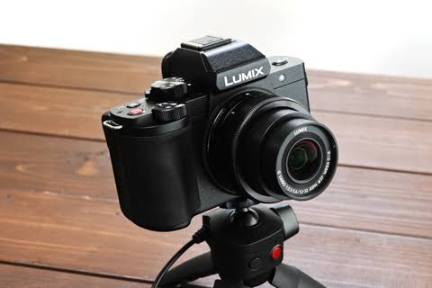
如果你想认真试试视频，可以看看松下G100。它装上套头约412 g，是2030万像素的M4/3微单，能拍真正的4K 30p视频。在这个预算下，它的视频规格比前面的E-M10 II强不少。
5.3 我有￥3000~4000，我要买什么相机？#
哈哈！对于很多人来说只能买“门锁”的价格，其实可以淘到真正的全画幅！来到3000元，老全画幅单反和功能更完整的旧无反开始出现在同一张购物清单里。
5.3.1 索尼A6400/ZV-E10套装#
套装包含：
- 机身 索尼A6400或索尼ZV-E10（第一代，二选一）
- 镜头 索尼E PZ 16-50 mm f/3.5-5.6
价格： 全部二手，A6400套装约￥3500；ZV-E10套装通常更便宜，约￥3000。
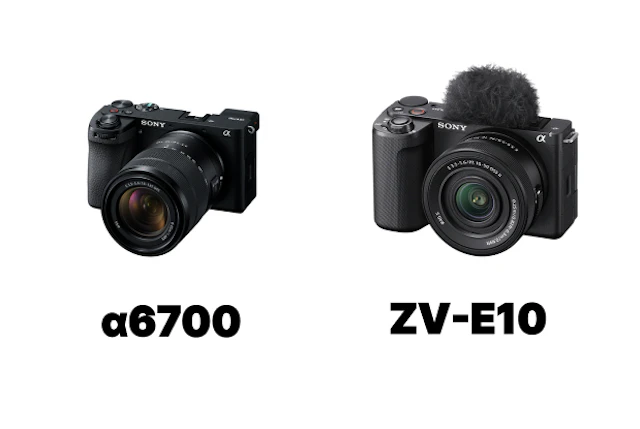
这两台基本上就是同一台相机。它们俩一直都被各个博主推荐，直到今天都是非常不错的入门经典选择。
如果主要拍照片，我更推荐A6400。它有电子取景器和内置闪光灯，白天在户外取景更方便。ZV-E10没有取景器，但机身更轻、有侧翻屏，也更便宜。对焦都足够应付日常人像和走动的宠物。16-50 mm是前面的同一款。
不管选哪台机身，总重都不到500 g，够轻。
5.3.2 尼康D610套装#
套装包含：
- 机身 尼康D610
- 镜头 AF-S 24-120 mm f/4G
- 镜头 AF-S 50 mm f/1.8G
价格： 全部二手，总价约￥4200。
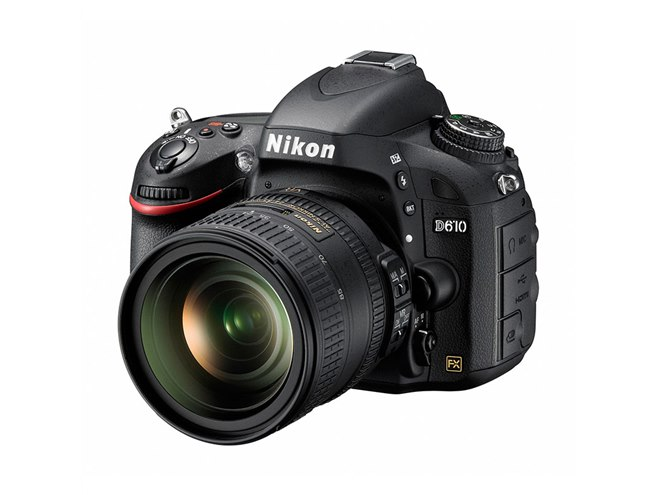
经典的单反套机组合。如果只要24-120 mm，价格大约3500元。24-120 mm从广角覆盖到中长焦，拍旅行、日常、人像都能用；全程最大光圈f/4，镜头还自带防抖。D610依然能让你以很低的预算体验约2400万像素的全画幅画质。说实话，除了重量、对焦和现代化操作，它和现代的Z6 III搭配尼康Z 24-120 mm f/4 S相差无几，价格却还不到这一套的1/4。
代价是重量和操控。D610+24-120 mm镜头约1.56 kg；f/4大部分时候都够用，但是对于夜间拍摄不太够看。额外加一个二手价格约700元，重约185 g的50 mm f/1.8可以满足夜拍需求。
对焦可以拍人和不太激烈的运动，但对焦点集中在中央；屏幕实时取景使用反差对焦。
5.3.3 奥林巴斯E-M5 II套装#
套装包含：
- 机身 奥林巴斯OM-D E-M5 Mark II
- 镜头 奥林巴斯M.ZUIKO DIGITAL 14-42 mm f/3.5-5.6 II
价格： 全部二手，总价约￥2500。
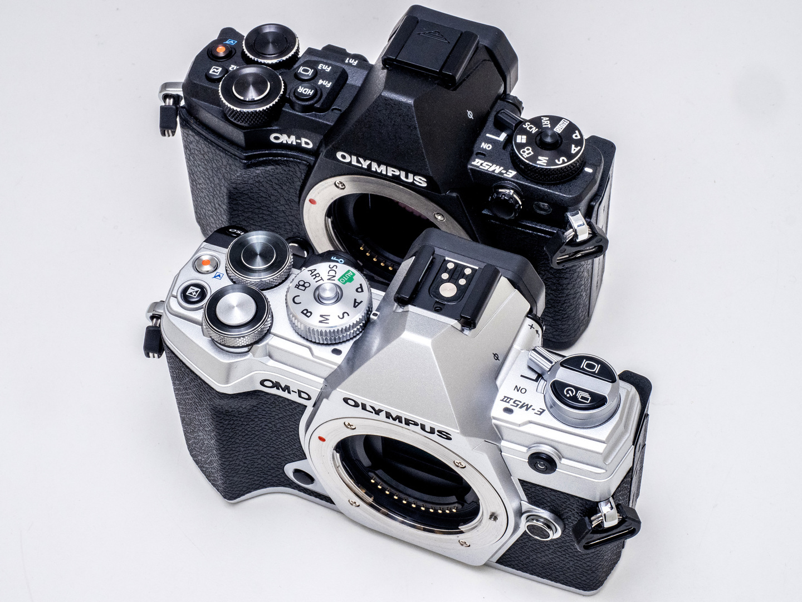
我一直都有点馋这个E-M5 II。它也是1600万像素级别的M4/3相机，但是机身质感、取景器、操控和防抖都更高端。而且顶上正经用了金属材质（E-M10 II用的塑料），手感非常好。14-42 mm等就是前面那个。
它的画质会比较一般，这个组合更适合在意重量和手感、喜欢M4/3小镜头群的人。总重约582 g，很轻便。
它的银色版本真的好看，推荐。
5.4 我有￥5000~6000，我要买什么相机？#
5.4.1 索尼A6400/ZV-E10套装#
套装包含：
- 机身 索尼A6400
- 机身 索尼ZV-E10（第一代）
- 镜头 E 18-135 mm f/3.5-5.6
- 镜头 适马18-50 mm f/2.8（索尼E卡口）
- 镜头 腾龙17-70 mm f/2.8（索尼E卡口）
价格： 全部二手，索尼E卡口适马18-50 mm约￥2500，腾龙17-70 mm约￥2600；不同机身和镜头搭配下来，总价约￥5000~6000。由于组合太多，所以价格我不能特别确定。
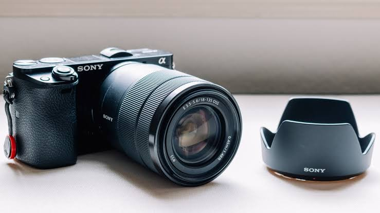
嗨嗨嗨，对的，又是这俩机身。这就是我在文章开头给那位同学推荐的核心组合。18-135 mm在它上面等效约27-202.5 mm，镜头重量约325 g，有防抖。这么大的变焦范围，基本上入门即毕业。这一套比上一套升级的主要就是镜头，配18-135 mm装机约668 g。
喜欢人像的话，以后再考虑补上适马30 mm f/1.4或者56 mm f/1.4这样的定焦。
如果不需要18-135 mm那么长的焦段，也可以把镜头换成适马的18-50 mm或者腾龙17-70 mm。两支镜头都能全程使用f/2.8，比18-135 mm更适合室内、人像和傍晚拍摄。适马等效约27-75 mm，只有290 g，比较轻巧。腾龙等效约25.5-105 mm，焦段更宽、更长，还有VC镜头防抖，代价是镜头重约525 g。这俩镜头之后还会出现很多次。
5.4.2 佳能EOS R50套装#
套装包含：
- 机身 佳能EOS R50
- 镜头 RF-S 18-45 mm f/4.5-6.3
价格： 欢迎来到新机的世界！全新套机在京东现价￥5699，建议蹲蹲双十一；没有优惠时可以看成色好的二手套机，约￥4000。
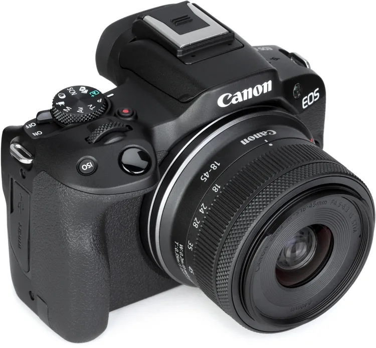
如果你不想研究一堆旧机身型号，只想买一台现代的相机，R50非常适合，各方面都明显比前面那些老相机省心。套头等效约29-72 mm，足够拍旅行、朋友和日常生活。
问题是18-45 mm能拍到的非常短，长焦端也只有f/6.3。以后可以买新一代“小痰盂”RF 50 mm f/1.8 STM补人像。R50+18-45 mm整套约505 g，很轻。
5.4.3 尼康Z50套装#
套装包含（二选一）：
- 机身 尼康Z50
- 镜头 Z DX 16-50 mm f/3.5-6.3 + Z DX 50-250 mm f/4.5-6.3
- 或镜头 Z DX 18-140 mm f/3.5-6.3
价格： 非常建议全部二手。双镜套装总价约￥4500；18-140 mm套装约￥5000-5500。
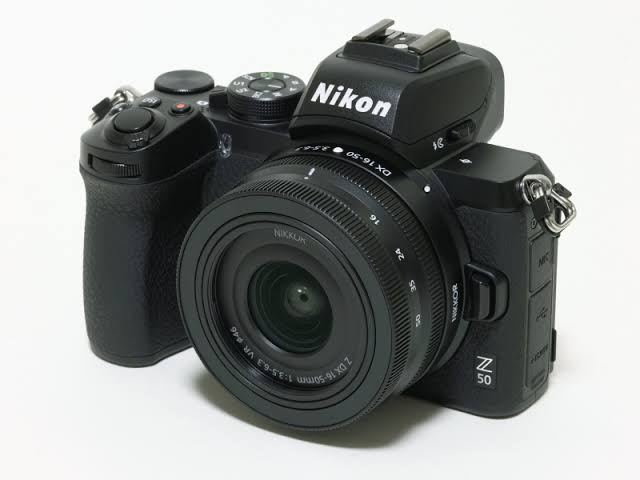
这两套解决的是不同问题。双镜套装等效约24-375 mm，适合还不知道自己喜欢什么题材、想先把焦段都试一遍的人。18-140 mm等效27-210 mm，少了一些广角和长焦，但不用反复换镜头。
Z50是约2090万像素的APS-C无反，有电子取景器，握持和操作都很正常。不过它是较早的Z卡口机身，自动对焦和主体识别不如Z50 II，也不如佳能R50。
Z50和两支镜头都带出门990 g，快一公斤了。装18-140 mm则只有765 g。
5.4.4 尼康Z5套装#
套装包含：
- 机身 尼康Z5
- 镜头 Z 24-50 mm f/4-6.3
价格： 二手套装已经不到￥5000了；现在京东全新套机￥6789。
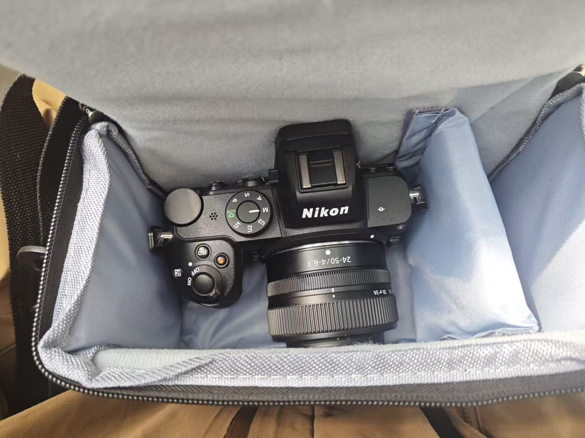
你好，传奇连拍王。图中是我购买当天拍的，自己的相机。这可能是本文第一套能在这个预算内买到的全画幅无反。Z5有约2430万像素的全画幅传感器、电子取景器、机身五轴防抖和双SD卡槽。24-50 mm镜头虽然很小，却是正经的尼康Z卡口全画幅镜头，直接装上就能拍，不需要转接。
但这套的预算也主要花在机身上：镜头只有24-50 mm，长焦端短，最大光圈会缩到f/6.3，如果以后明确喜欢人像或暗光拍摄，还得给大光圈镜头留预算。Z5的自动对焦足够拍风景、日常和普通人像，追拍快速运动的主体完全不如更新的机身。Z5和24-50 mm整套约870 g。
这个预算我其实更推荐Z50，但是如果你真的真的想从全画幅开始学习摄影，可以选Z5。
这一小节也是写给自己的。我的第一台相机就是我省吃俭用到线下店买的尼康Z5。我站在“过来人”的角度还是不推荐这个预算的同学强行上全画幅，因为24-50 mm用着太憋屈了。但是我曾经这么选，代表肯定还有人可能想这么选，我也必须作出回应。希望各位能继续在摄影这条路上越走越远。
5.4.5 佳能EOS R8套装#
套装包含：
- 机身 佳能EOS R8
- 镜头 RF 24-50 mm f/4.5-6.3
价格： 机身与镜头全二手套机约￥6300。
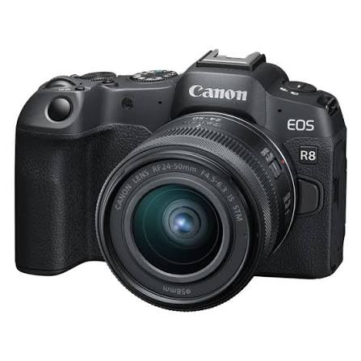
R8对全画幅相机来说非常轻，整机约671 g。这个套头只有两倍左右变焦，以后迟早要升级。要是预算不够再加镜头，最好先用这支镜头拍几个月，弄清自己缺什么。
顺带一提，最近R8发布了2代。很丑，除了防抖以外没有明显升级，不推荐。这一套比尼康Z5更推荐，因为R8比Z5操作起来明显更加现代，对焦也更得心应手（真是好时代啊……）。
5.5 我有￥7000~9000，我要买什么相机？#
5.5.1 尼康Z50 II套装#
套装包含（二选一）：
二手机身方案：
- 机身 尼康Z50 II
- 镜头 Z DX 18-140 mm f/3.5-6.3
价格： Z50 II二手机身搭配二手18-140 mm，￥8000以内。

这次选择二手机身，能把更多预算留给镜头。18-140 mm前面介绍过。Z50 II换上了尼康的新一代处理器，自动对焦和主体识别比第一代进步很大。不过它还是没有机身防抖。整套约865 g。
5.5.2 索尼A7 III套装#
套装包含：
- 机身 索尼A7 III
- 镜头 腾龙28-200 mm f/2.8-5.6（索尼E卡口）
价格： 全部二手，总价约￥7000-7500。
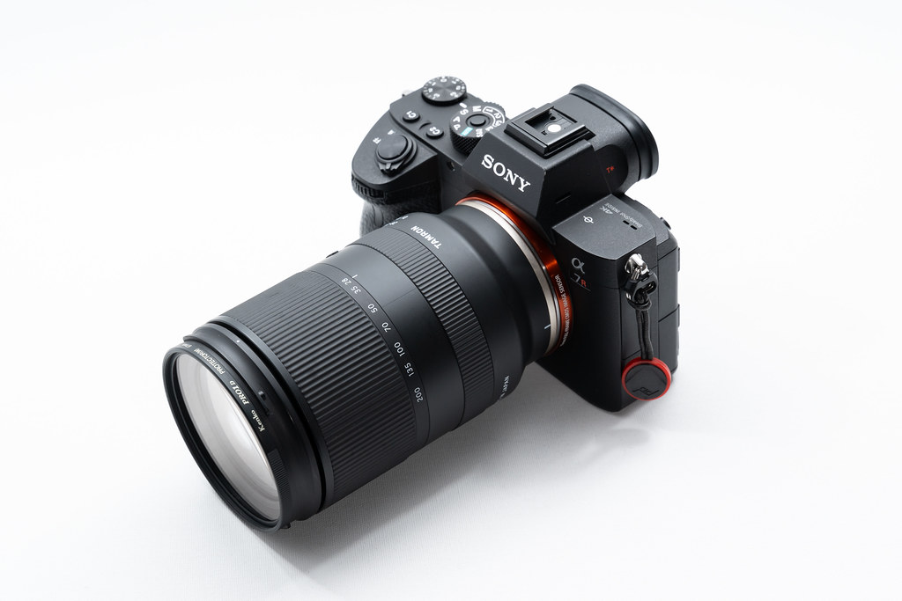
孩子们，请迎接伟大的索尼大人。有不到5000元的单机身价格，它是这个价位段所有相机最严厉的父亲。而腾龙28-200 mm，所有索尼玩家的入门神镜，能从普通广角一直覆盖到中长焦，广角端还能给到f/2.8，而且二手只要2500元！多么伟大的组合！
但请注意它是上一代索尼。它的取景器、屏幕、菜单和主体识别都没有今天的新机舒服。对焦能力和新机器的对焦能力差距不算大，但是可感知。装机约1.23 kg。
5.5.3 佳能EOS R10套装#
套装包含：
- 机身 佳能EOS R10
- 镜头 RF-S 18-150 mm f/3.5-6.3
- 镜头 适马18-50 mm f/2.8（RF卡口）
- 镜头 腾龙17-70 mm f/2.8（RF卡口）
价格： 机身全新、RF-S 18-150 mm二手，总价约￥7300-8000。佳能RF卡口的适马18-50 mm二手约￥2800，腾龙17-70 mm二手约￥3000。
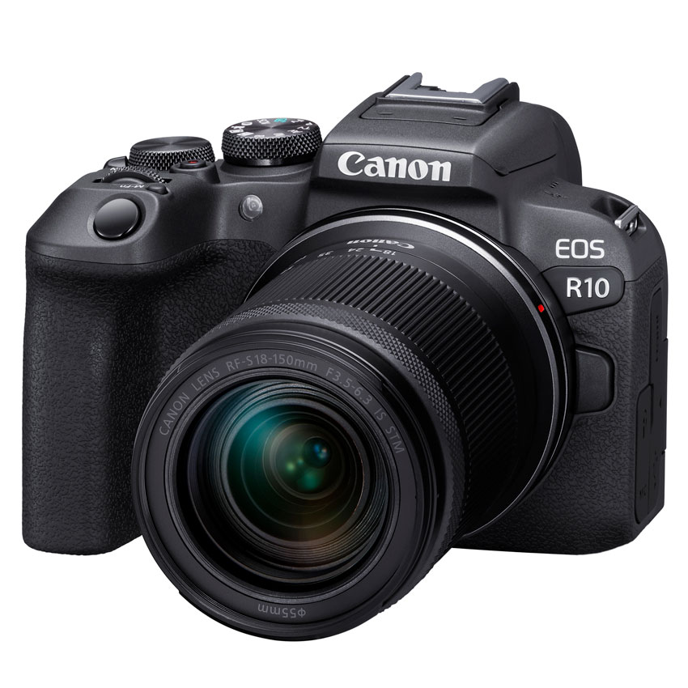
18-150 mm是更适合旅行的方案。R10的自动对焦、取景器和操控比R50更完整，更专业；18-150 mm在佳能APS-C机身上等效约29-240 mm。R10和18-150 mm总重约740 g。
适马腾龙前面讲过，不赘述。副厂镜头买的时候认准佳能RF卡口版本，别买成索尼了。
5.6 我有￥10000~12000，我要买什么相机？#
这里终于上了五位数，想必看到这里的各位都对摄影有一定追求（或者兜里比较有钱）吧。佳能、索尼、尼康的全画幅在这一档都有了，接下来就看你更喜欢哪套机身和镜头。
5.6.1 佳能EOS R6 Mark II套装#
套装包含：
- 机身 佳能EOS R6 Mark II
- 镜头 RF 24-105 mm f/4-7.1
价格： 二手机身￥8000-8500，二手镜头不到￥2000。京东国补单机不到￥9500，搭配二手镜头，整套也能控制在￥11500以内。
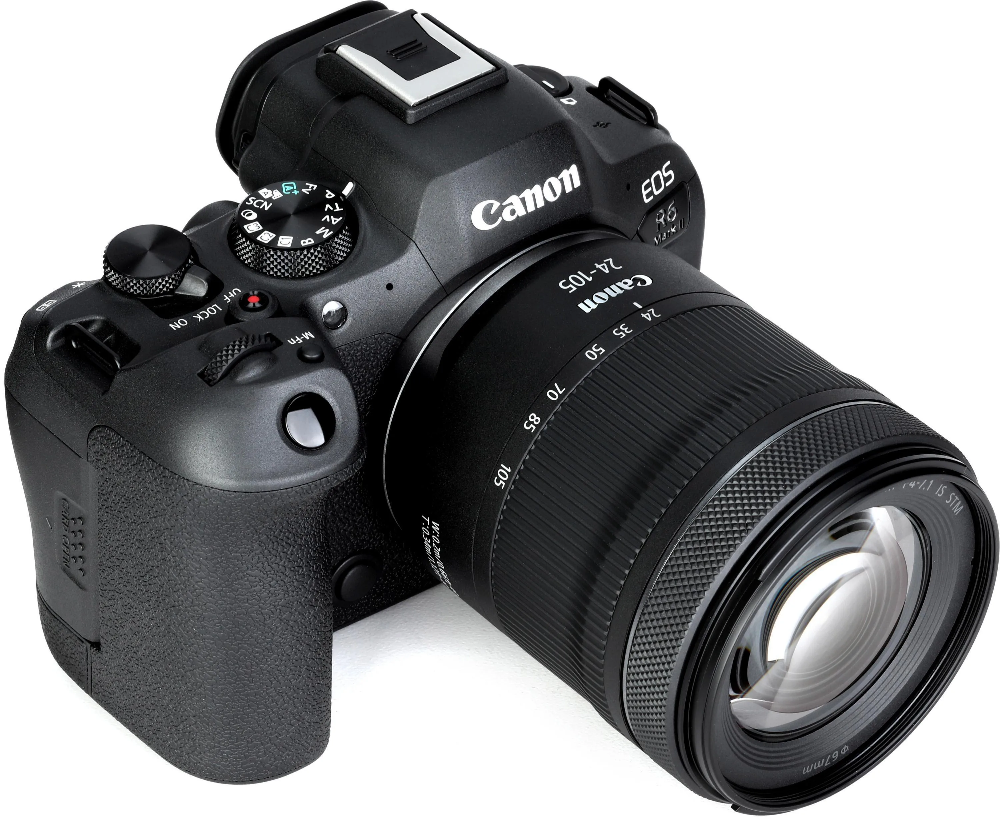
这个价格，我不得不强烈推荐R6 Mark II。前面那台R8已经便宜到可以去￥6000档，但来到一万元左右，R6 Mark II给了你更完整的机身：约2400万像素的全画幅传感器、机身防抖、双卡槽、更舒服的握持与操控，还有很可靠的自动对焦。
这支RF 24-105 mm f/4-7.1就是大家说的24-105银圈，不要和后面那支恒定f/4的L红圈弄混（那个二手要7000元）。它便宜、轻，24-105 mm的范围也比24-50 mm实用。装机约1.07 kg。
5.6.2 索尼A7C II/A7 IV套装#
套装包含（机身二选一）：
- 机身 索尼A7C II
- 机身 索尼A7 IV（也就是大名鼎鼎的A7M4）
- 镜头 腾龙28-200 mm f/2.8-5.6（索尼E卡口）
价格： A7C II京东全新机身叠加国补￥9279，二手约￥8000；A7 IV全新￥11260，二手不到￥9000。二手腾龙28-200 mm约￥2500。
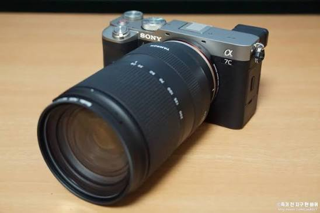
比起A7 III，A7C II和A7 IV给你约3300万像素、机身防抖和更好的对焦，整体操作和体验都变得更加现代。
A7C II适合在意轻便、又想要较新对焦的人。配腾龙28-200 mm约1.09 kg。不过它的小取景器、浅握把和单卡槽都是实打实的取舍（取景器和屏幕真他妈烂，我都懒得喷）。A7 IV则是更像传统主力机的选择，搭配这支镜头约1.23 kg，换来更深的握把、更大也更清楚的电子取景器，以及可以同时备份照片的双卡槽。A7 IV的屏幕也谈不上出色。索尼的屏幕都不咋样。
注意一下二手A7 IV的购买：很多摄影师和视频创作者拿它当干活机，二手市场里会混有高强度使用的机身，水比较深。对价格有顾虑建议选择全新A7C II。
5.6.3 尼康Zf套装#
套装包含：
- 机身 尼康Zf
- 镜头 Z 24-70 mm f/4 S
- 镜头 Z 40 mm f/2
价格： 二手机身约￥7000，两支镜头也买二手，整套约￥10000-11000。京东全新单机约￥10939，没有性价比。
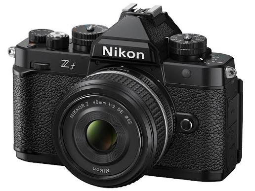
我推荐Zf的前提是买二手。它有约2450万像素、机身防抖和EXPEED 7处理器，对焦比前面那台Z5一代相比强得多。24-70 mm f/4 S负责旅行和日常，是能正经玩的全画幅标准变焦。40 mm f/2负责轻便出门、室内和傍晚。顺带一提，40 mm f/2有一个专门为Zf设计的复古版本，好看，推荐。不过Zf手感很一般。
Zf机身偏重，710 g，手感也一般。两支镜头都带上约1.38 kg。
5.6.4 索尼A6700套装#
套装包含：
- 机身 索尼A6700
- 镜头 适马18-50 mm f/2.8（E卡口）
- 镜头 腾龙17-70 mm f/2.8（E卡口）
- 镜头 适马16-300 mm f/3.5-6.7 DC OS Contemporary（E卡口）
- 镜头 腾龙18-300 mm f/3.5-6.3 Di III-A VC VXD（E卡口）
- 镜头 索尼E 70-350 mm f/4.5-6.3 G
价格： 机身二手￥6500上下，京东全新￥7500。适马18-50 mm ￥2500；腾龙17-70 mm ￥2600；适马16-300 mm ￥2900；腾龙18-300 mm ￥2000；索尼70-350 mm ￥4000。
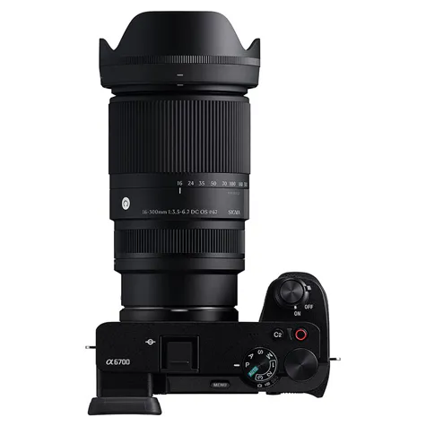
A6700是一个堪称高端的APS-C机型。它有约2600万像素、机身防抖和现代索尼的主体识别。比起A6400对焦有明显进步。适马18-50 mm和腾龙17-70 mm也是老朋友了。
想要一镜走天下，就换适马16-300 mm或者腾龙18-300 mm。如果有专门拍鸟的需求，稍微更贵的索尼70-350 mm可以满足你。它的画质、对焦也比腾龙适马的大变焦头更优秀。
整机最轻是搭配适马18-50 mm约783 g，而配上腾龙18-300 mm约1.11 kg。
5.7 我有￥15000，我要买什么相机？#
5.7.1 索尼A7C II/A7 IV套装#
套装包含（机身与镜头各选一）：
- 机身 索尼A7C II
- 机身 索尼A7 IV
- 镜头 索尼FE 20-70 mm f/4 G
- 镜头 适马28-70 mm f/2.8（E卡口）
- 镜头 腾龙28-75 mm f/2.8（E卡口）
- 镜头 腾龙25-200 mm f/2.8-5.6（E卡口）
价格： 机身价格前面说过。二手机身分别约￥8000和不到￥9000。 镜头二手价：索尼20-70 mm约￥5000，适马28-70 mm不到￥3000，腾龙28-75 mm G2不到￥4000，腾龙25-200 mm G2约￥4500。腾龙25-200 mm G2全新约￥4700。
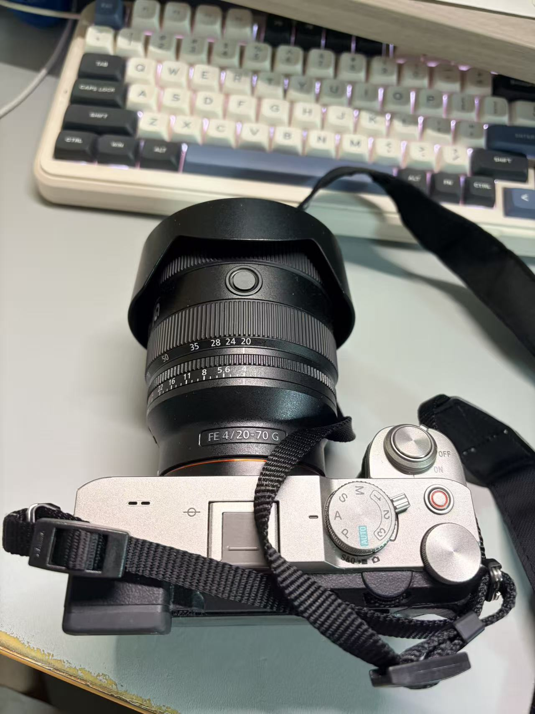
图中是我现在用的索尼索尼A7C II和20-70 mm f/4 G。这里主要看镜头。20-70 mm f/4 G是我自己选择的挂机镜头。20 mm很有用，但是全程只有f/4。适马28-70 mm和腾龙28-75 mm G2都是恒定f/2.8，不过没广角。
如果不追求恒定光圈，我强烈推荐腾龙25-200 mm G2。25 mm比上一档的28-200 mm更宽，价格也不错，我会优先考虑全新。镜头重量相互之间都差不多，都约500 g。
适马20-200 mm f/3.5-6.3有明显光学问题，不推荐。
5.7.2 尼康Z5 II套装#
套装包含：
双镜方案：
- 机身 尼康Z5 II
- 镜头 Z 24-70 mm f/4 S
- 镜头 Z 50 mm f/1.8 S
一镜方案（镜头二选一）：
- 机身 尼康Z5 II
- 镜头 Z 24-200 mm f/4-6.3
- 镜头 Z 24-120 mm f/4 S
可按预算加购：
- 镜头 Z 40 mm f/2
价格： 全新Z5 II ￥9749。二手24-70 mm f/4 S约￥2800，二手50 mm f/1.8 S约￥2300。二手24-200 mm约￥3500-4500；二手24-120 mm f/4 S不超过￥5200。40 mm f/2二手约￥700。
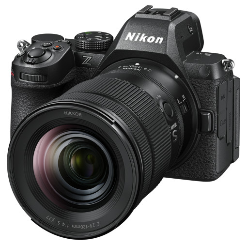
比起40 mm，50 mm f/1.8 S是一个画质和定位都更好的镜头，也就是前面说的“狗王”。
如果你不想频繁换镜头，就在24-200 mm和24-120 mm f/4 S之间选。24-200 mm焦段更长，适合旅行；24-120 mm f/4 S焦段短一些，但画质和光圈表现更好。预算够的话我个人更推荐24-120 mm。Z5 II的对焦也比Z5一代可靠得多。
5.7.3 佳能EOS R6 Mark II套装#
套装包含：
- 机身 佳能EOS R6 Mark II
- 镜头 RF 24-105 mm f/4 LUSM
价格： 二手机身约￥8000-8500，二手镜头约￥7000；京东国补后全新机身不到￥9500。总体来说略超。
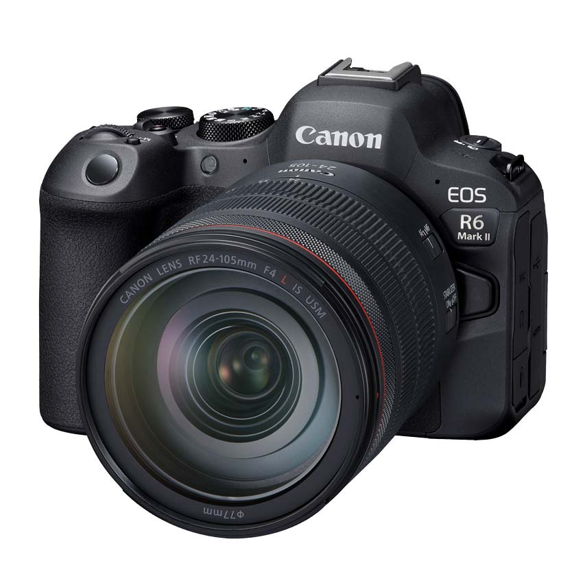
这一套把银圈24-105 mm换成了更高端的恒定f/4的L红圈。R6 Mark II和红圈24-105 mm装机约1.37 kg，相当重。
5.8 我是富哥/富姐，我有￥20000以上，我要买什么相机？#
你好，欢迎来到高预算的世界。
5.8.1 索尼A7 V套装#
套装包含：
- 机身 索尼A7 V
- 镜头 索尼FE 20-70 mm f/4 G
价格： 京东旗舰店叠加国补后全新A7 V机身￥14299，二手20-70 mm f/4 G约￥5000，整套约￥19299。
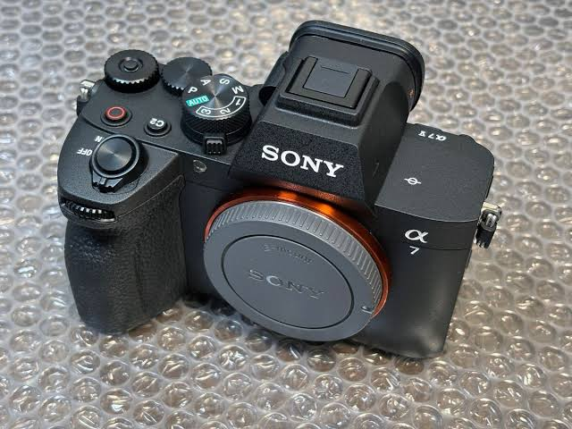
A7 V含电池和卡约695 g，20-70 mm约488 g，这套装机约1.18 kg。若你主要拍照片，而且暂时只买一支常用变焦，这套在两万元内很有竞争力。
5.8.2 尼康Z6 III套装#
套装包含：
- 机身 尼康Z6 III
- 镜头 Z 24-120 mm f/4 S
价格： 全新机身￥12749，二手镜头约￥5200，整套约￥17949，剩余预算留给存储卡或其他配件，也可以额外添置一些镜头。
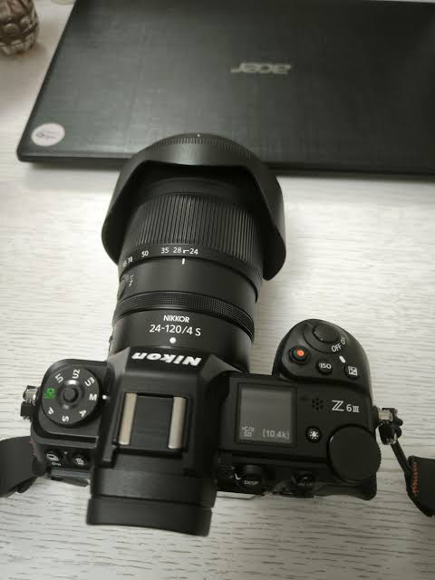
跟Z5 II相比，Z6 III机身贵了整整3000元。这笔钱主要买的是部分堆栈式传感器：电子快门拍快速运动时果冻效应更容易控制，高速连拍和预拍摄更从容。大部分情况下Z5 II已经足够。若你经常追拍活动、动物，或者认真拍视频，Z6 III的升级才比较明显。
24-120 mm f/4 S焦段和画质都适合长期挂机。Z6 III相当重，含电池和卡约760 g，整套约1.39 kg。Z6 III的识别和对焦能力都很强，妥妥的第一梯队，不太用担心。
5.8.3 佳能EOS R6 Mark III套装#
套装包含：
- 机身 佳能EOS R6 Mark III
- 镜头 RF 24-105 mm f/4 LUSM
价格： 京东全新机身￥15799，配约￥7000的二手红圈24-105 mm整套约￥23000。
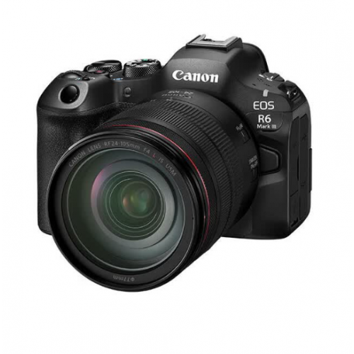
R6 Mark III的机身机身比R6 Mark II明显进步了一代，但说实话，新手用不出来这两台机身的区别。机身装红圈约1.40 kg。如果必须守住两万元，我建议直接回到R6 Mark II，然后配红圈24-105 mm。
5.8.4 尼康Z6 III/Z5 II拍鸟套装#
套装包含（机身与标准镜头各选一）：
- 机身 尼康Z6 III
- 机身 尼康Z5 II
- 镜头 Z 24-50 mm f/4-6.3
- 镜头 Z 24-70 mm f/4 S
- 镜头 Z 180-600 mm f/5.6-6.3
价格： Z6 III全新机身￥12749；二手180-600 mm约￥9000；Z5 II全新机身￥9749；二手24-70 mm f/4 S约￥2800；24-50 mm不到￥1000。
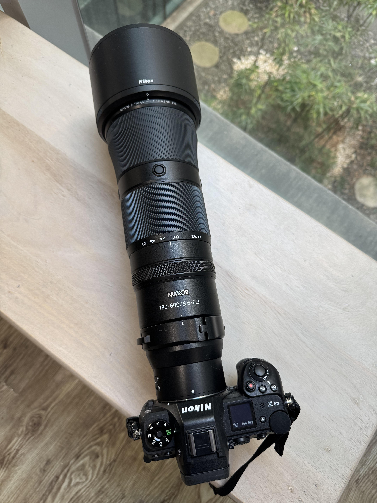
180-600 mm是很多人的第一支打鸟镜头。Z6 III对焦和连拍有利于飞鸟；但是Z5 II也有鸟类识别和3D跟踪，预算有限时可以先把钱放在长焦镜头上。剩下的那两颗标准变焦只是让你的相机在不拍鸟的时候也能日常使用。
180-600 mm毕竟是超长焦，拆下脚架环约1955 g，相当重。
5.8.5 索尼A7C II/A7 IV双镜套装#
套装包含（机身与长焦镜头各选一）：
- 机身 索尼A7C II
- 机身 索尼A7 IV
- 镜头 索尼FE 20-70 mm f/4 G
- 镜头 腾龙50-300 mm f/4.5-6.3 Di III VC VXD（索尼E卡口）
- 镜头 索尼FE 100-400 mm f/5.6-8
- 镜头 腾龙50-400 mm f/4.5-6.3 Di III VC VXD（索尼E卡口）
价格： 二手20-70 mm约￥5000，二手腾龙50-300 mm约￥3200，二手腾龙50-400 mm约￥5000。索尼100-400 mm f/5.6-8刚上市，现价￥5499；但是我建议等到约￥4000再买。
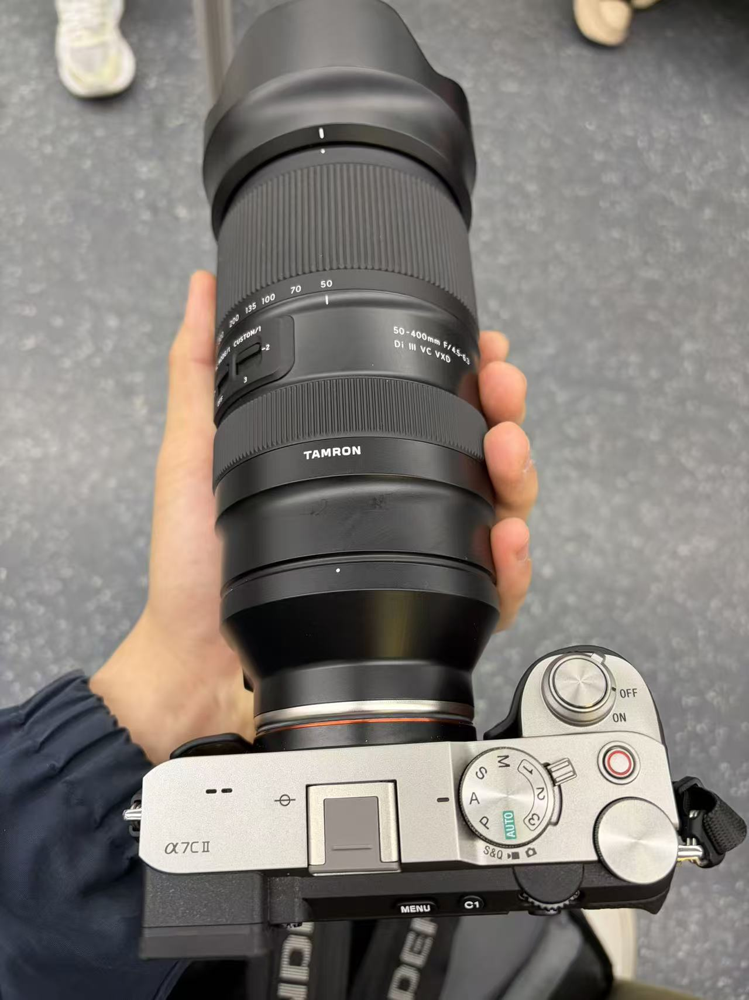
20-70 mm负责日常，长焦再按题材挑。我自己正在考虑腾龙50-300 mm：它从50 mm就能开始拍，约665 g，作为第一次尝试长焦很合适。不过300 mm拍远处的鸟仍然不够；这时候可以看400 mm的两支镜头。
索尼新出的FE 100-400 mm f/5.6-8约654 g，轻得很夸张，但是刚上市，不必急着买。腾龙50-400 mm代价是重约1 kg。亲身经验：如果你要旅游，别买50-400 mm。一公斤放在哪里都非常重，而且旅游风光包括拍飞机火车等基本上300 mm真的很够用了。
5.9 一共要准备多少钱？#
5.9.1 配件花多少？#
最重要的有这些：电脑存储空间（硬盘）、相机存储卡（具体用什么自己查）、电池充电器（如果没有的话）、摄影包，没了。
剩下的除了灯具和三脚架（这两个品类非常复杂，都可以开专门的章节了），一概都是解决细分的具体需求的。用了才有需求，不要提前买太多配件。
5.9.2 标价就是使用成本吗？#
不是，买入价值≠使用成本。除非你一开始打定主意要长期持有，摄影器材真正的使用成本，大致是买入价减去将来的卖出价和一些零散损失。要一开始就抱着“卖出去的时候保值”的判断标准来选择你的器材。我推荐买二手镜头，正是因为第一次从全新到二手的折价已经被第一任买家承担了。
5.9.3 我以后升级还要花多少钱？#
第一套便宜，不代表整个卡口都便宜（如果你认真读了文章你就知道我在指某个红色品牌）。买前想一下第二支镜头可能是什么：超广角、人像定焦、长焦，各要多少钱？你以后若想从APS-C升级全画幅，手里的半画幅镜头也不能继续用。还要留意电池、存储卡、闪光灯等能否沿用。
5.10 怎么买？#
5.10.1 买全新还是二手？#
我倾向于机身买新、镜头买成色好的二手。电子元件更难在短时间内排查干净，退换与保修也比较省心。
5.10.2 买套机还是分别买？#
比价格，谁便宜买谁。
5.10.3 去哪买？要检查吗？#
全新优先选能明确开票的正规渠道。同一平台也要区分自营、品牌店和第三方卖家。线下店能上手摸机身但是可能比较黑。二手平台的优势是便宜，代价是你得自己判断卖家、成色和售后。二手线下交易比线上更难看出问题（因为你不专业，而且时间短），自己收到货在家仔细检验会更好。便宜到离谱的机身先保持怀疑。检查内容上网查。
5.10.4 国行、港水、拆机、展示机和官翻有什么区别？#
国行通常最方便走本地正规保修。港水会便宜得多（甚至比二手便宜），但是保修麻烦。拆机可以自己判断，官翻和展示机不推荐。
5.11 买完相机，怎样才能拍？#
5.11.1 存储卡买哪种？#
先查相机说明书或品牌官网写明的卡槽类型，再买卡。大多数入门相机用全尺寸SD卡。CFexpress分Type A、Type B等不同外形，不通用。有些机身的卡槽同时支持SD和某一种CFexpress。
5.11.2 我需要多快的卡？#
总预算低于5000的随便买个不到200的SD卡差不多得了。更高的买V30的SD卡。有明确需求的人机器估计也不错，建议直接上CFexpress。不放心就问问AI或者我。
5.11.3 要买读卡器吗？#
要。相机的官方App通常能传少量照片，发朋友圈够用。有些老相机不支持。读卡器和电脑通常更省时间，买读卡器前确认型号。
5.11.4 原厂电池、副厂电池、充电器怎么买？#
拍几天就知道够不够用了，一般不够。看好自己的电池型号然后去网上买副厂的。至于副厂选什么牌子，就选你听说过的绿联、绿巨能一类。充电器一般买副厂电池会送。
但是！想送自己玩摄影的对象礼物的看这里：原厂电池非常合适，因为这种东西属于ta自己不愿意买但是收到了绝对用得上而且很开心的物件，推荐。
5.12 还需要什么？#
5.12.1 摄影包怎么选？#
已经有或者商家送就别买。最低需求就是9.9包邮，完全能用。如果要买，一定要先量尺寸。也可以买内胆放自己现有的包里。
5.12.2 三脚架该怎么选？#
对一些需求来说三脚架有必要，没需求就别买。三脚架很复杂，而且比你想象的更贵。建议多看看网上。
5.12.3 滤镜怎么买？#
新手直接别买。UV镜保护作用其实不如遮光罩，而且会让画质变差，强烈不推荐。偏振镜、减光镜明确有需求再买。
5.12.4 下雨、潮湿怎么办？#
淋小雨大部分时候没太大问题，但是记得回家立马擦干。冬天从室外进暖房、夏天从空调房到潮湿室外，都可能结露。一个好方法是放包里过一会，让包慢慢升温之后拿出来。
5.12.5 清洁套装、防潮箱和干燥剂要买吗？#
推荐以下产品：蔡司擦镜湿巾、气吹（吹灰用）、防潮箱或者密封箱+干燥剂，防杭州有用。
5.13 灯光和转接#
5.13.1 需要闪光灯、反光板或补光灯吗？#
拍人像需要，但是我不懂。我请了朋友写这部分，等他写完了我更新一下。
5.13.2 转接能省钱吗？#
能，但是有条件。如果你家里已经有旧镜头，合适的转接环比重买镜头便宜。
5.14 照片存储和处理#
5.14.1 照片存在哪里？#
至少把照片复制到电脑或硬盘，再留一份独立副本。特别重要的照片，可以按“三份副本、两种介质、一份异地（321）”的思路再加。
5.14.2 电脑和显示器需要升级吗？#
不一定。先用现有电脑处理几次照片再说。
6 相机到了，怎么拍照？#
这里我将只讲解曝光三要素、挡位，和修图。 前面说了，曝光三要素是快门速度、光圈和ISO。我将分别讲述。 至于其他的，请阅读相机说明书。这是非常好的习惯。
6.1 为什么我拍出来是模糊的？——快门速度、防抖和对焦对成片的影响#
快门速度决定传感器接收光线的时间。相机上写的1/1000 s，就是曝光千分之一秒；1/30 s则比它长得多。快门越快，运动的物体越容易被“定住”，但能收到的光也越少。从1/250 s调到1/500 s，曝光时间减半，进光量也减半，这就叫快门快了一挡。如果其他设置不变，照片会暗一挡。
照片糊，常见的原因有三种：主体自己动了、拿相机的手晃了，或者根本没有对上焦。背景清楚而人脸拖出重影，通常是主体运动；画面里静止的东西也朝同一个方向拖影，更像手抖；主体前后的东西反倒清楚，就是对焦问题。放大照片看一眼，再决定下一步。
拍移动目标时，快门要跟着主体的速度走。1/125 s可以先拿来试拍相对安静的人，走动的人可以从1/250 s试起，跑动的宠物、运动员可能要1/500 s甚至1/1000 s，飞鸟还可能需要更快。
手抖是另一回事。没有防抖时，可以先把“快门不慢于全画幅等效焦距的倒数”，也就是安全快门，当作粗略起点：例如用等效200 mm的视角手持拍静物，先试1/200 s，再按自己的稳定程度调整。注意一下：机身或镜头防抖能让你在拍静物时尝试更慢的快门，但它无法让正在奔跑的狗停下来。
如果为了防止模糊把快门从1/125 s提高到1/500 s，进光时间就只剩四分之一。你需要更大的光圈、更多现场光线，或者提高ISO来维持照片亮度。这里就是曝光三要素开始互相牵制的地方。
6.2 光圈#
f值我们说了很多。我们称1.4倍（根号2）为一挡光圈，也就是说：f/2.8的镜头比f/2的镜头“小一挡光圈”，即少一半进光量。
大光圈可以让景深变浅，带来更多的背景虚化。充足的背景虚化可以将主体从环境中剥离开来，使构图更加简单，避免杂乱环境影响。不过相同的光圈，在不同焦段的镜头，虚化效果会不一样。小传感器的相机拍的虚化也会小。
大光圈还能带来更多的进光量。在暗光环境、高速拍摄中都会非常有用。英文的镜头评测博主们称大光圈镜头为“Fast lenses”，也是这个原因：更多进光量能让你提高快门速度。
6.3 ISO#
ISO是感光度。它和光圈、快门不太一样，不决定进光量，主要决定相机怎样处理收到的信号。把ISO 800调到1600，在光圈、快门不变时，照片大致会亮一挡，但传感器并没有凭空多收到一倍的光。信号变亮时，暗部的噪点也可能更明显，高光则更容易失去细节。
ISO建议让相机自动决定。请绝大多数时候都让相机决定ISO。
6.4 “第四要素”——曝光补偿#
很多相机上有一个写着“±”的按钮、拨轮，这就是曝光补偿。拨到+是总体更亮，拨到-则是想拍得更暗。具体操作看说明书。拍完记得检查它有没有回到0，不然下一次打开相机，所有照片都偏亮或偏暗。
曝光补偿的单位通常写作EV。“＋1档”就是要求相机把它原本判断的照片亮度提高一倍，“−1档”则是降为一半。例如它可能把1/250 s变成1/125 s，或者把自动ISO 400变成800。
和很多人的第一反应不太一样：拍雪地时相机常想把白色压成灰色，所以反而应该试着往＋调；拍大面积黑色时则可能要往−调。
6.5 相机上的AUTO、A、S、P、M是什么？——拍摄档位#
这些字母决定的主要是：光圈、快门速度和ISO由你来定，还是交给相机来定。没有“用M挡才算会摄影”这回事。具体教程网上很多。
- AUTO：相机尽量替你决定所有设置，拿起来就能拍。
- A（佳能叫Av）：光圈优先。你决定光圈，相机选择快门速度，并调整ISO。
- S（佳能叫Tv）：快门优先。你决定快门速度，相机选择光圈，并调整ISO。
- P：程序自动。相机先决定光圈和快门，你仍然可以设置ISO（如果你没开自动）、曝光补偿等项目。比AUTO更自由一些。
- M：手动曝光。光圈和快门都由你决定，ISO可以自己定，也可以保持自动。新手先别用。
6.6 拍完用什么修图？RAW文件为什么不叫RAW？#
首先要说，回家后要尽快导出（这是一个好习惯）。
RAW是“原始照片文件”的统称，不是一个统一的文件后缀，每个品牌不同。RAW保留了更多调整空间，但体积较大，也不能像JPEG一样直接拿去所有地方分享。
修普通照片，我会首要推荐用Lightroom Classic。Photoshop更适合复杂的局部修饰和合成，刚入门不必先学它。浙大正版网站提供免费的Adobe Photoshop和Lightroom Classic。
也不是每张照片都必须修。只想快速分享，直接拍JPEG就行；想保留后期余地，可以拍RAW＋JPEG，先用JPEG，需要时再回头处理RAW。